本章以低速、宏观尺度的经典质点模型为出发点；除火箭等明确标出的开放系统外，均假设各质点质量不变，时间为牛顿绝对时间。主线是： \[\begin{aligned} &\text{运动学描述}\ \longrightarrow\ \text{牛顿定律与微分方程}\\ &\quad\longrightarrow\ \text{功、能与守恒律}\ \longrightarrow\ \text{质点系与质心运动}\\ &\quad\longrightarrow\ \text{非惯性系}\ \longrightarrow\ \text{有心力与拉格朗日点}. \end{aligned}\] 学习时不要只记住公式，而要始终追问三个问题：参考系是什么？约束条件是什么？哪一个守恒量可以简化问题？
1.1运动的描述与分量表达式
运动学是力学的语言。描述一个运动，首先要回答“相对于谁”“用什么坐标”“用哪一组变量”这三个问题；同一运动在不同坐标系中可以有完全不同的分量形式。本节从参考系、位矢和轨道出发，建立速度、加速度的普遍定义，再讨论直角坐标、极坐标、自然坐标和球坐标中的分量表达式。掌握这些表示之间的转换，是后续建立运动方程和识别守恒量的基础。
1.1.1参考系、坐标系与质点
运动是相对的。描述一个物体的位置及其变化，必须先指定一个作为基准的物体或物体群，称为参考系。在参考系上建立适当的数学框架，用以定量地标定空间位置，称为坐标系。参考系是物理的选择，坐标系是数学的选择；同一参考系中可以选用直角坐标、极坐标、球坐标等不同坐标系。
定义 1.1 (质点). 当物体的形状和大小对所研究的问题影响可以忽略时，可以把物体抽象为具有全部质量的几何点，称为质点。质点是一个理想模型，而不是“很小的物体”。
质点模型是否适用，取决于“尺度比”而不是绝对大小。研究地球公转时，地球可视为质点；研究地球自转或潮汐时，地球的大小和形状不可忽略，质点模型失效。判断标准是：物体的线度远小于问题中的特征长度，且转动、形变等内部自由度不参与动力学。
在直角坐标系中，质点 \(P\) 的位置由三个坐标 \((x,y,z)\) 给出。从坐标原点 \(O\) 指向 \(P\) 的有向线段称为位置矢量，简称位矢： \[\mathbf{r}=x\hat{\mathbf{\imath}}+y\hat{\mathbf{\jmath}}+z\hat{\mathbf{k}}. \tag{1.1}\] 位矢的大小为 \[r=|\mathbf{r}|=\sqrt{x^2+y^2+z^2}. \tag{1.2}\]
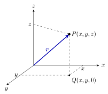
1.1.2运动方程、位移、速度与加速度
当质点运动时，其坐标随时间变化。位矢作为时间的函数 \[\mathbf{r}(t)=x(t)\hat{\mathbf{\imath}}+y(t)\hat{\mathbf{\jmath}}+z(t)\hat{\mathbf{k}} \tag{1.3}\] 称为运动方程。消去时间 \(t\)，得到坐标之间的约束关系 \[F(x,y,z)=0, \tag{1.4}\] 通常只能描述一个曲面；一般三维轨迹需两条独立关系 \(F_1(x,y,z)=F_2(x,y,z)=0\)，或保留参数形式。对平面运动，一条平面内的关系才足以称为轨道方程。运动方程给出“何时到何处”，轨道方程只给出“经过哪些点”。
设质点在 \(t\) 时刻位于 \(A\)，在 \(t+\Delta t\) 时刻位于 \(B\)，则 \[\Delta\mathbf{r}=\mathbf{r}_B-\mathbf{r}_A \tag{1.5}\] 称为 \(\Delta t\) 时间内的位移。位移是矢量，描述位置的净变化；它与路程 \(\Delta s\) 不同，后者是轨迹弧长的增量。
平均速度为 \(\Delta\mathbf{r}/\Delta t\)。令 \(\Delta t\to0\)，得到瞬时速度 \[\mathbf{v}=\lim_{\Delta t\to0}\frac{\Delta\mathbf{r}}{\Delta t} =\frac{\mathrm{d}\mathbf{r}}{\mathrm{d}t}=\dot{\mathbf{r}}. \tag{1.6}\] 在直角坐标中 \[\mathbf{v}=\dot x\hat{\mathbf{\imath}}+\dot y\hat{\mathbf{\jmath}}+\dot z\hat{\mathbf{k}}. \tag{1.7}\] 速度的大小称为速率： \[v=|\mathbf{v}|=\frac{\mathrm{d}s}{\mathrm{d}t}=\sqrt{\dot x^2+\dot y^2+\dot z^2}. \tag{1.8}\] 加速度定义为 \[\mathbf{a}=\frac{\mathrm{d}\mathbf{v}}{\mathrm{d}t}=\frac{\mathrm{d}^2 \mathbf{r}}{\mathrm{d}t^2} =\ddot x\hat{\mathbf{\imath}}+\ddot y\hat{\mathbf{\jmath}}+\ddot z\hat{\mathbf{k}}. \tag{1.9}\]
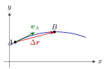
速度是“位置对时间的变化率”，加速度是“速度对时间的变化率”。二者都是矢量，但方向一般不同：匀速圆周运动的加速度指向圆心，而速度沿切线；一般曲线运动中，加速度总可以分解为切向分量（改变速率）与法向分量（改变速度方向）。
同一运动在不同坐标系中有不同的分量形式。选择坐标系的原则是：让约束和对称性尽可能简单。
1.1.3直角坐标与平面极坐标 ✦ 交互模拟：圆柱脱离与运动学 ↗ ✦ 交互模拟：二连杆雅可比与奇异位形 ↗
在直角坐标系中，基矢量 \(\hat{\mathbf{\imath}},\hat{\mathbf{\jmath}},\hat{\mathbf{k}}\) 不随时间变化，因此 \[\mathbf{v}=\dot x\hat{\mathbf{\imath}}+\dot y\hat{\mathbf{\jmath}}+\dot z\hat{\mathbf{k}},\qquad \mathbf{a}=\ddot x\hat{\mathbf{\imath}}+\ddot y\hat{\mathbf{\jmath}}+\ddot z\hat{\mathbf{k}}. \tag{1.10}\] 这是最简单的情形：对分量分别求导即可。
在平面极坐标 \((r,\theta)\) 中，取径向单位矢量 \(\hat{\mathbf{e}}_r\) 沿位矢方向，横向单位矢量 \(\hat{\mathbf{e}}_\theta\) 垂直于 \(\hat{\mathbf{e}}_r\) 且指向 \(\theta\) 增大的方向： \[\hat{\mathbf{e}}_r=\cos\theta\,\hat{\mathbf{\imath}}+\sin\theta\,\hat{\mathbf{\jmath}},\qquad \hat{\mathbf{e}}_\theta=-\sin\theta\,\hat{\mathbf{\imath}}+\cos\theta\,\hat{\mathbf{\jmath}}. \tag{1.11}\] 位矢的直角坐标参数表示为 \[\mathbf{r}=r\cos\theta\,\hat{\mathbf{\imath}}+r\sin\theta\,\hat{\mathbf{\jmath}}. \tag{1.12}\] 固定 \(r\)，对 \(\theta\) 求偏导： \[\left.\frac{\partial \mathbf{r}}{\partial \theta}\right|_r =r(-\sin\theta\,\hat{\mathbf{\imath}}+\cos\theta\,\hat{\mathbf{\jmath}})=r\hat{\mathbf{e}}_\theta. \tag{1.13}\] 因此 \[\hat{\mathbf{e}}_\theta=\frac{1}{r}\left.\frac{\partial \mathbf{r}}{\partial \theta}\right|_r,\] 即 \(\hat{\mathbf{e}}_\theta\) 是圆周 \(r=\text{常量}\) 的切向方向。类似地，固定 \(\theta\) 对 \(r\) 求偏导，得到 \[\left.\frac{\partial \mathbf{r}}{\partial r}\right|_\theta =\cos\theta\,\hat{\mathbf{\imath}}+\sin\theta\,\hat{\mathbf{\jmath}}=\hat{\mathbf{e}}_r,\] 即径向方向。可见极坐标的两个基矢量分别是位矢对 \(r\)、\(\theta\) 的偏导数；其中 \(\hat{\mathbf{e}}_\theta\) 需除以 \(r\) 才能归一化为单位矢量。
当 \(\theta\) 变化时，基矢量也随之转动： \[\frac{\mathrm{d}\hat{\mathbf{e}}_r}{\mathrm{d}\theta}=\hat{\mathbf{e}}_\theta,\qquad \frac{\mathrm{d}\hat{\mathbf{e}}_\theta}{\mathrm{d}\theta}=-\hat{\mathbf{e}}_r. \tag{1.14}\] 因此 \[\frac{\mathrm{d}\hat{\mathbf{e}}_r}{\mathrm{d}t}=\dot\theta\,\hat{\mathbf{e}}_\theta,\qquad \frac{\mathrm{d}\hat{\mathbf{e}}_\theta}{\mathrm{d}t}=-\dot\theta\,\hat{\mathbf{e}}_r. \tag{1.15}\] 位矢为 \(\mathbf{r}=r\hat{\mathbf{e}}_r\)，求导得 \[\mathbf{v}=\dot r\,\hat{\mathbf{e}}_r+r\dot\theta\,\hat{\mathbf{e}}_\theta. \tag{1.16}\] 再求导，并利用基矢量导数，得 \[\mathbf{a}=(\ddot r-r\dot\theta^2)\hat{\mathbf{e}}_r+ \left(r\ddot\theta+2\dot r\dot\theta\right)\hat{\mathbf{e}}_\theta. \tag{1.17}\] 其中 \(a_r=\ddot r-r\dot\theta^2\) 称为径向加速度，\(a_\theta=r\ddot\theta+2\dot r\dot\theta\) 称为横向加速度。横向项也可写成 \[a_\theta=\frac{1}{r}\frac{\mathrm{d}}{\mathrm{d}t}\left(r^2\dot\theta\right), \tag{1.18}\] 这一形式在角动量守恒问题中特别有用。
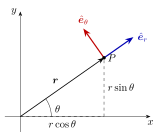
式 (1.17) 中，\(-\,r\dot\theta^2\hat{\mathbf{e}}_r\) 是向心加速度项，\(2\dot r\dot\theta\,\hat{\mathbf{e}}_\theta\) 是科里奥利型项。它们不是“新的力”，而是基矢量随质点转动所产生的几何效应。只要把 \(\hat{\mathbf{e}}_r,\hat{\mathbf{e}}_\theta\) 看成随位置变化的标架，这些项就会自然出现。
例 1.1 (同一椭圆，恒角速度与开普勒运动有何不同？). 取平面椭圆 \(r=p/(1+e\cos\theta)\)，\(p=a(1-e^2)\)，\(0<e<1\)。先把它当作给定路径，若外部驱动强制 \(\dot\theta=\omega\) 恒定，则 \[\dot r=\frac{pe\sin\theta}{(1+e\cos\theta)^2}\omega, \qquad v_\theta=r\omega.\] 此时面积速度 \(r^2\omega/2\) 随位置改变，并非开普勒运动，通常需要额外切向力。
若改为平方反比引力下的真实轨道，面积常量 \(h=r^2\dot\theta\) 给出 \(\dot\theta=h/r^2\)。用同一个 \(\mathrm{d}r/\mathrm{d}\theta\)，得到 \[v_r=\frac{he}{p}\sin\theta,\qquad v_\theta=\frac{h}{r}=\frac{h}{p}(1+e\cos\theta),\] \[v=\frac{h}{p}\sqrt{1+2e\cos\theta+e^2}.\] 近心点与远心点处 \(v_r=0\)，且 \(v_p/v_a=r_a/r_p=(1+e)/(1-e)>1\)：真实引力轨道在近心点更快。\(e\to0\) 时两种描述都退化为圆周运动。给定一条几何轨迹并不等于已经给定它的时间演化。
1.1.4自然坐标系与内禀方程
当轨道已知时，用弧长 \(s\) 作为参数最方便。定义切向单位矢量 \[\hat{\mathbf{e}}_t=\frac{\mathrm{d}\mathbf{r}}{\mathrm{d}s}, \tag{1.19}\] 它沿轨道切线指向 \(s\) 增大的方向。在光滑正则曲线上，曲率定义为 \[\kappa=\left|\frac{\mathrm{d}\hat{\mathbf{e}}_t}{\mathrm{d}s}\right|=\frac{1}{\rho}, \tag{1.20}\] 其中 \(\rho\) 为曲率半径。平面曲线还可用切线转角表示 \(\kappa=|\mathrm{d}\varphi/\mathrm{d}s|\)；空间曲线一般不能用单个切线角代替。以下要求速率非零、曲率非零；直线段可取 \(\rho\to\infty\)，但主法向不唯一。主法向单位矢量 \(\hat{\mathbf{e}}_n\) 指向曲率中心，满足 \[\frac{\mathrm{d}\hat{\mathbf{e}}_t}{\mathrm{d}s}=\kappa\hat{\mathbf{e}}_n=\frac{1}{\rho}\hat{\mathbf{e}}_n. \tag{1.21}\] 于是 \[\mathbf{v}=\frac{\mathrm{d}\mathbf{r}}{\mathrm{d}s}\frac{\mathrm{d}s}{\mathrm{d}t}=v\hat{\mathbf{e}}_t, \tag{1.22}\] \[\mathbf{a}=\frac{\mathrm{d}\mathbf{v}}{\mathrm{d}t}=\dot v\,\hat{\mathbf{e}}_t+\frac{v^2}{\rho}\hat{\mathbf{e}}_n. \tag{1.23}\] 这就是自然坐标下的内禀方程：切向加速度 \(\dot v\) 改变速率，法向加速度 \(v^2/\rho\) 改变速度方向。
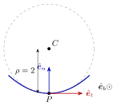
对于平面曲线 \(y=y(x)\)，曲率半径的常用公式为 \[\rho=\frac{\left[1+(y')^2\right]^{3/2}}{|y''|}. \tag{1.24}\] 对于一般空间曲线 \(\mathbf{r}(t)\)， \[\kappa=\frac{|\mathbf{r}'\times\mathbf{r}''|}{|\mathbf{r}'|^3}. \tag{1.25}\]
例 1.2 (加速度与速度夹角恒定的圆周运动). 质点沿半径为 \(R\) 的圆周运动，其加速度 \(\mathbf{a}\) 与速度 \(\mathbf{v}\) 的夹角 \(\alpha\) 保持不变，初速率为 \(v_0\)。求速率 \(v(t)\)，并讨论 \(\alpha=90^\circ\) 与 \(\alpha<90^\circ\) 的物理含义。
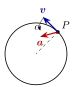
解：在自然坐标系中，加速度分解为切向与法向分量： \[a_t=\dot v,\qquad a_n=\frac{v^2}{R}.\] 由“\(\mathbf{a}\) 与 \(\mathbf{v}\) 的夹角 \(\alpha\) 恒定”得 \[\tan\alpha=\frac{a_n}{a_t} =\frac{v^2}{R\dot v}.\] 于是 \[\frac{\mathrm{d}v}{v^2}=\frac{\mathrm{d}t}{R\tan\alpha}.\] 积分并代入 \(v(0)=v_0\)： \[-\frac1v+\frac1{v_0}=\frac{t}{R\tan\alpha},\] 即 \[v(t)=\frac{v_0}{1-\dfrac{v_0t}{R\tan\alpha}} .\] 当 \(\alpha=90^\circ\) 时，\(\tan\alpha\to\infty\)，\(v(t)\equiv v_0\)，退化为匀速圆周运动。当 \(0<\alpha<90^\circ\) 时，加速度有沿速度方向的分量，速率增大；形式上在 \(t_*=R\tan\alpha/v_0\) 处发散，说明不存在延拓到 \(t_*\) 的有限速率运动；实际驱动力与相对论效应会限制这一理想模型。当 \(90^\circ<\alpha<180^\circ\) 时，切向分量与速度相反，质点减速。
1.1.5柱坐标与球坐标
先从柱坐标 \((\rho,\varphi,z)\) 开始。它在水平面使用极坐标，沿轴仍用直角坐标：\(x=\rho\cos\varphi,y=\rho\sin\varphi\)。令 \(\hat{\mathbf{e}}_\rho=(\cos\varphi,\sin\varphi,0)\)，\(\hat{\mathbf{e}}_\varphi=(-\sin\varphi,\cos\varphi,0)\)，则 \[\mathbf{r}=\rho\hat{\mathbf{e}}_\rho+z\hat{\mathbf{k}},\qquad \dot{\hat{\mathbf{e}}}_\rho=\dot\varphi\hat{\mathbf{e}}_\varphi,\quad \dot{\hat{\mathbf{e}}}_\varphi=-\dot\varphi\hat{\mathbf{e}}_\rho.\] 逐项微分得 \[\begin{aligned} \mathbf{v}&=\dot\rho\hat{\mathbf{e}}_\rho+\rho\dot\varphi\hat{\mathbf{e}}_\varphi+\dot z\hat{\mathbf{k}},\\ \mathbf{a}&=(\ddot\rho-\rho\dot\varphi^2)\hat{\mathbf{e}}_\rho +(\rho\ddot\varphi+2\dot\rho\dot\varphi)\hat{\mathbf{e}}_\varphi+\ddot z\hat{\mathbf{k}}. \end{aligned}\tag{1.26}\] 若 \(z\) 恒定，它恢复前面的平面极坐标；柱坐标特别适合轴对称问题。注意 \(\rho\) 是到轴的距离，而下面的 \(r\) 是到原点的距离。
在球坐标 \((r,\theta,\varphi)\) 中， \[x=r\sin\theta\cos\varphi,\qquad y=r\sin\theta\sin\varphi,\qquad z=r\cos\theta . \tag{1.27}\] 三个单位矢量为 \[\hat{\mathbf{e}}_r=\sin\theta\cos\varphi\,\hat{\mathbf{\imath}}+\sin\theta\sin\varphi\,\hat{\mathbf{\jmath}}+\cos\theta\,\hat{\mathbf{k}}, \tag{1.28}\] \[\hat{\mathbf{e}}_\theta=\cos\theta\cos\varphi\,\hat{\mathbf{\imath}}+\cos\theta\sin\varphi\,\hat{\mathbf{\jmath}}-\sin\theta\,\hat{\mathbf{k}}, \tag{1.29}\] \[\hat{\mathbf{e}}_\varphi=-\sin\varphi\,\hat{\mathbf{\imath}}+\cos\varphi\,\hat{\mathbf{\jmath}}. \tag{1.30}\] 它们随时间的导数为 \[\dot{\hat{\mathbf{e}}_r}=\dot\theta\,\hat{\mathbf{e}}_\theta+\dot\varphi\sin\theta\,\hat{\mathbf{e}}_\varphi, \tag{1.31}\] \[\dot{\hat{\mathbf{e}}_\theta}=-\dot\theta\,\hat{\mathbf{e}}_r+\dot\varphi\cos\theta\,\hat{\mathbf{e}}_\varphi, \tag{1.32}\] \[\dot{\hat{\mathbf{e}}_\varphi}=-\dot\varphi\left(\sin\theta\,\hat{\mathbf{e}}_r+\cos\theta\,\hat{\mathbf{e}}_\theta\right). \tag{1.33}\] 于是速度为 \[\mathbf{v}=\dot r\,\hat{\mathbf{e}}_r+r\dot\theta\,\hat{\mathbf{e}}_\theta+r\dot\varphi\sin\theta\,\hat{\mathbf{e}}_\varphi. \tag{1.34}\] 为看清交叉项的来源，将 \(\dot{\mathbf{v}}\) 按三个乘积求导： \[\mathbf{a}=\ddot r\hat{\mathbf{e}}_r+\dot r\dot{\hat{\mathbf{e}}_r} +(\dot r\dot\theta+r\ddot\theta)\hat{\mathbf{e}}_\theta+r\dot\theta\dot{\hat{\mathbf{e}}_\theta} +\frac{\mathrm{d}}{\mathrm{d}t}(r\dot\varphi\sin\theta)\hat{\mathbf{e}}_\varphi +r\dot\varphi\sin\theta\dot{\hat{\mathbf{e}}_\varphi}.\] 代入基矢导数，分别收集 \(\hat{\mathbf{e}}_r,\hat{\mathbf{e}}_\theta,\hat{\mathbf{e}}_\varphi\) 的系数，得到加速度分量 \[\begin{aligned} a_r&=\ddot r-r\dot\theta^2-r\dot\varphi^2\sin^2\theta,\\ a_\theta&=r\ddot\theta+2\dot r\dot\theta-r\dot\varphi^2\sin\theta\cos\theta,\\ a_\varphi&=\frac{1}{r\sin\theta}\frac{\mathrm{d}}{\mathrm{d}t}\left(r^2\dot\varphi\sin^2\theta\right). \end{aligned}\tag{1.35}\] 其中 \(a_\varphi\) 的写法体现了绕 \(z\) 轴的角动量守恒结构。
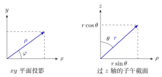
单位矢量的导数可以统一写成 \[\frac{\mathrm{d}\mathbf{e}_i}{\mathrm{d}t}=\mathbf{\omega}\times\mathbf{e}_i, \tag{1.36}\] 其中 \(\mathbf{\omega}\) 是标架转动的角速度。极坐标中 \(\mathbf{\omega}=\dot\theta\hat{\mathbf{k}}\)，球坐标中 \(\mathbf{\omega}=\dot\varphi\hat{\mathbf{k}}+\dot\theta\,\hat{\mathbf{e}}_\varphi\)（注意 \(\hat{\mathbf{e}}_\varphi\) 本身也在转）。用这个观点可以快速检查式 (1.17) 和球坐标加速度的各项。
最后，运动学问题通常分为两类：
已知运动方程 \(\mathbf{r}(t)\)，求速度、加速度：对时间求导；
已知加速度 \(\mathbf{a}(t)\) 或速度 \(\mathbf{v}(t)\)，求运动方程：积分并利用初始条件。
第二类问题的数学形式为 \[\mathbf{v}(t)=\mathbf{v}_0+\int_{t_0}^{t}\mathbf{a}(t')\,\mathrm{d}t',\qquad \mathbf{r}(t)=\mathbf{r}_0+\int_{t_0}^{t}\mathbf{v}(t')\,\mathrm{d}t'. \tag{1.37}\] 初始条件 \((\mathbf{r}_0,\mathbf{v}_0)\) 的选取决定了具体的运动轨道。
例 1.3 (月球车车轮上的点：摆线). 月球车车轮半径为 \(R\)，在月面作无滑动滚动，轮缘上一点 \(P\) 的轨迹称为摆线。设 \(t=0\) 时 \(P\) 与月面接触，圆心以速度 \(v_0=R\omega\) 匀速前进。求 \(P\) 的运动方程、速度和加速度，并解释轨迹尖点处的运动学。
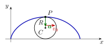
解：取滚动方向为 \(x\) 轴，月面为 \(y=0\)。设车轮转角的正大小为 \(\theta=\omega t\)。无滑动条件给出圆心坐标 \((R\theta,R)\)；点 \(P\) 相对圆心的坐标为 \((-R\sin\theta,-R\cos\theta)\)。因此 \[x=R(\theta-\sin\theta),\qquad y=R(1-\cos\theta).\] 对时间求导，注意 \(\dot\theta=\omega\)： \[\dot x=R\omega(1-\cos\theta),\qquad \dot y=R\omega\sin\theta,\] 速率为 \[v=\sqrt{\dot x^2+\dot y^2} =R\omega\sqrt{2(1-\cos\theta)} =2R\omega\left|\sin\frac{\theta}{2}\right|.\] 再求导得 \[\ddot x=R\omega^2\sin\theta,\qquad \ddot y=R\omega^2\cos\theta,\] 故加速度大小恒为 \(R\omega^2\)，方向始终指向圆心。
在 \(\theta=0\) 处，\(P\) 与月面接触，\(v=0\)，但 \(\mathbf{a}=(0,R\omega^2)\neq0\)。轨迹在此出现尖点（cusp）：速度为零只是瞬时静止，并不表示加速度为零。在 \(\theta=\pi\) 处，\(P\) 位于最高点，\(v=2R\omega\)，加速度向下。这个例子说明：运动学描述必须同时看位置、速度和加速度，不能由“某一时刻速度为零”推断“没有加速度”。月面重力只影响动力学，不改变车轮滚动的几何轨迹。
例 1.4 (空间站机械臂：正运动学与雅可比矩阵). 考虑基座固定的平面二连杆教学模型：两段刚性连杆长度分别为 \(l_1,l_2\)，关节角为 \(\theta_1,\theta_2\)，末端执行器为 \(P\)。求末端位置、速度和加速度，并讨论奇异位形。本例用于训练复合运动求导，不代表实际空间机械臂的完整结构；若基座自由漂浮，还须计入基座反冲。
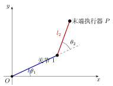
解：设基座 \(O\) 为原点，第一段连杆与 \(x\) 轴夹角为 \(\theta_1\)，第二段连杆相对第一段的夹角为 \(\theta_2\)。末端位置为 \[x=l_1\cos\theta_1+l_2\cos(\theta_1+\theta_2),\qquad y=l_1\sin\theta_1+l_2\sin(\theta_1+\theta_2). \tag{1.38}\] 这就是正运动学：给定关节角 \((\theta_1,\theta_2)\)，求末端位置 \((x,y)\)。
对时间求导，得速度映射 \[\begin{pmatrix}\dot x\\ \dot y\end{pmatrix} = \underbrace{ \begin{pmatrix} -l_1\sin\theta_1-l_2\sin(\theta_1+\theta_2) & -l_2\sin(\theta_1+\theta_2)\\ l_1\cos\theta_1+l_2\cos(\theta_1+\theta_2) & l_2\cos(\theta_1+\theta_2) \end{pmatrix} }_{J(\theta_1,\theta_2)} \begin{pmatrix}\dot\theta_1\\ \dot\theta_2\end{pmatrix}. \tag{1.39}\] 矩阵 \(J\) 称为雅可比矩阵，它把关节速度映射为末端速度。再求导得 \[\begin{pmatrix}\ddot x\\ \ddot y\end{pmatrix} =J\begin{pmatrix}\ddot\theta_1\\ \ddot\theta_2\end{pmatrix} +\dot J\begin{pmatrix}\dot\theta_1\\ \dot\theta_2\end{pmatrix}, \tag{1.40}\] 其中 \(\dot J\) 由 \(J\) 对时间逐项求导得到。加速度不仅包含关节加速度经 \(J\) 的贡献，还包含速度二次项（离心与科里奥利型项），这正是机器人动力学中非线性项的来源。
雅可比行列式为 \[\det J=l_1l_2\sin\theta_2 . \tag{1.41}\] 当 \(\theta_2=0\) 或 \(\theta_2=\pi\) 时，\(\det J=0\)，机械臂处于奇异位形：末端在某个方向上瞬时失去运动能力。\(\theta_2=0\) 对应手臂完全伸直，\(\theta_2=\pi\) 对应完全折叠。奇异位形在轨迹规划、力控制和强化学习中都需要特别处理。
反过来，给定末端位置 \((x,y)\)，求关节角 \((\theta_1,\theta_2)\) 称为逆运动学。由余弦定理 \[\cos\theta_2=\frac{x^2+y^2-l_1^2-l_2^2}{2l_1l_2},\] 一般有两组解（“肘上”和“肘下”），对应机器人的不同构型。
关节坐标与末端坐标间的雅可比是局部映射。由本例继续学习机器人动力学，需要多元微积分以及第三、五章的约束与刚体知识。注意一个关节角的梯度给出一个输出的偏导；计算完整多输出雅可比一般需要组织多次求导，不能把它简单等同于一次标量梯度计算。进一步阅读可先完成本章运动学题，再学习第三章的广义坐标。
1.2质点运动的基本规律与微分方程
牛顿定律把“运动”与“相互作用”联系起来，是质点动力学的公理基础。有了受力分析，牛顿第二定律就给出关于位置或速度的微分方程；求解这个微分方程并代入初始条件，就得到运动规律。本节把牛顿三定律、惯性系概念和各种典型的运动微分方程放在同一条逻辑线上，重点是学会“建方程—定初始条件—解方程—作物理讨论”的完整流程。
1.2.1牛顿三定律与惯性系
牛顿力学以三个基本定律为基础。第一定律指出惯性参考系的存在；第二定律给出力与加速度的定量关系；第三定律说明物体间相互作用的对称性。
惯性定律：任何物体在不受外力作用时，保持静止或匀速直线运动状态。它定义了惯性参考系，也说明“力不是维持运动的原因，而是改变运动状态的原因”。
运动定律：质点的动量对时间的变化率等于作用在质点上的合力， \[\mathbf{F}=\frac{\mathrm{d}\mathbf{p}}{\mathrm{d}t}=\frac{\mathrm{d}}{\mathrm{d}t}(m\mathbf{v})=m\mathbf{a}. \tag{1.42}\] 这里已经使用了恒定质量条件。对于火箭这样的开放系统，不能将当前火箭的 \(\mathrm{d}(m\mathbf{v})/\mathrm{d}t\) 直接等同于外力，必须计入跨边界的动量通量。
作用与反作用定律：对接触力、万有引力和静电力等常见情形，两物体间的作用力与反作用力大小相等、方向相反、沿同一直线，分别作用在两个物体上： \[\mathbf{F}_{12}=-\mathbf{F}_{21}. \tag{1.43}\] 对运动电荷之间的磁力，这一强形式一般不成立，下文的例子会说明其适用边界。
牛顿第三定律的适用边界：沿 \(x,y\) 轴运动的两个电荷.
考虑两个点电荷：\(q_1\) 位于原点，沿 \(x\) 轴以速度 \(v_1\) 运动；\(q_2\) 位于 \((0,d,0)\)，沿 \(y\) 轴以速度 \(v_2\) 运动。取这一瞬时，在 \(v\ll c\) 的非相对论近似下计算它们之间的磁力。
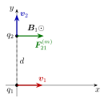
\(q_1\) 在 \(q_2\) 处产生的磁场为 \[\mathbf{B}_1=\frac{\mu_0}{4\pi}\frac{q_1\mathbf{v}_1\times(d\hat{\hat{\mathbf{\jmath}}})}{d^3} =\frac{\mu_0q_1v_1}{4\pi d^2}\hat{\hat{\mathbf{k}}},\] 方向垂直纸面向外。于是 \(q_2\) 受到的磁力为 \[\mathbf{F}_{21}^{(m)}=q_2v_2\hat{\hat{\mathbf{\jmath}}}\times\mathbf{B}_1 =\frac{\mu_0q_1q_2v_1v_2}{4\pi d^2}\hat{\hat{\mathbf{\imath}}},\] 沿 \(x\) 轴正方向。反过来，\(q_2\) 在原点产生的磁场为 \[\mathbf{B}_2=\frac{\mu_0}{4\pi}\frac{q_2\mathbf{v}_2\times(-d\hat{\hat{\mathbf{\jmath}}})}{d^3}=0,\] 因为 \(\mathbf{v}_2\parallel \hat{\hat{\mathbf{\jmath}}}\)。所以 \(q_1\) 在这一瞬时不受磁力： \[\mathbf{F}_{12}^{(m)}=0.\] 上述只比较低速磁场贡献；不能在保留 \(v^2/c^2\) 阶磁力的同时，把同阶电场修正和迟滞效应全部忽略，借此求精确的总受力。磁力部分本身已显示 \[\mathbf{F}_{21}^{(m)}\neq -\mathbf{F}_{12}^{(m)}.\] 因此，牛顿第三定律的强形式对运动电荷之间的磁力不成立。
这并不意味着动量守恒失效。在完整电磁理论中，粒子的机械动量可以与场交换；差额必须由电磁场动量及边界动量通量补足。电磁场的动量密度为 \(\epsilon_0\mathbf{E}\times\mathbf{B}\)，把场动量计入后，总动量仍然守恒。牛顿第三定律因此不是普遍规律，而是接触力、中心力和静场极限下的有效规律；对运动电荷必须使用“粒子 + 场”的总动量守恒。磁力是 \(v^2/c^2\) 阶的相对论修正，但在概念上已经足以说明牛顿第三定律的边界。
牛顿第二定律是矢量方程，等价于三个分量方程。解题时先选参考系、再画受力图、最后写分量方程。切忌把“合力”与“某个力”混为一谈，也切忌在非惯性系中直接套用 \(\mathbf{F}=m\mathbf{a}\) 而不加惯性力。
牛顿定律的成立依赖于参考系的选择。若在一个参考系中，不受力的质点保持静止或匀速直线运动，则该参考系称为惯性参考系。相对于某一惯性系作匀速直线平动的参考系仍是惯性系；作加速运动或转动的参考系则是非惯性系。
伽利略相对性原理断言：一切惯性系对力学规律等价。数学上，这表现为牛顿方程在伽利略变换下形式不变。因此，我们不能通过力学实验判断自己是“静止”还是“匀速运动”；只有相对于其他物体的运动才有意义。
“惯性系”并不是一个绝对的概念。在广义相对论中，引力与惯性力在局部不可区分，惯性系只在局部时空邻域内定义。经典力学把惯性系当作全局存在的背景，这是宏观低速条件下的理想化。
1.2.2自由质点与约束质点
若质点不受约束，只受已知外力 \(\mathbf{F}(\mathbf{r},\dot{\mathbf{r}},t)\)，则运动由二阶矢量微分方程 \[m\ddot{\mathbf{r}}=\mathbf{F}(\mathbf{r},\dot{\mathbf{r}},t) \tag{1.44}\] 描述。若 \(\mathbf{F}\) 对状态变量局部满足利普希茨条件，例如在所考察区域连续可微，给定初始位置 \(\mathbf{r}_0\) 和初始速度 \(\mathbf{v}_0\) 可局部唯一确定运动；奇异力心处不能直接引用这一结论。直角坐标下为三个耦合的标量方程： \[m\ddot x=F_x(x,y,z,\dot x,\dot y,\dot z,t),\quad m\ddot y=F_y(\cdots),\quad m\ddot z=F_z(\cdots). \tag{1.45}\]
下面考虑受约束的情形。若质点被限制在曲线或曲面上运动，约束会对质点施加约束力 \(\mathbf{R}\)。此时 \[m\ddot{\mathbf{r}}=\mathbf{F}+\mathbf{R}. \tag{1.46}\] 约束力通常未知，需要与约束方程联立求解。若约束是光滑的，约束力垂直于约束面（或曲线）；若存在摩擦，还需补充摩擦定律。
在自然坐标系中，式 (1.46) 分解为 \[m\dot v=F_t+R_t,\qquad m\frac{v^2}{\rho}=F_n+R_n,\qquad 0=F_b+R_b . \tag{1.47}\] 此处自然标架公式针对固定曲线。光滑固定曲线上 \(R_t=0\)；若沿 \(s\) 正向滑动，库仑动摩擦模型给出 \(R_t=-\mu_k R_N\)，其中 \(R_N=\sqrt{R_n^2+R_b^2}\)。静止接触时用 \(|R_t|\le\mu_s R_N\)，方向由平衡需求决定。移动曲面上的光滑反力不一定与实际速度垂直，因而也可能做功。
约束力不是“外加的已知力”，而是约束条件对运动的响应。求解约束力时，先用运动方程求出法向加速度，再由式 (1.47) 反推 \(R_n\)。这也是判断约束是否“离开”的依据：对于只能推、不能拉的单侧接触，若沿允许支持方向求得负反力，接触解就失效，应改为脱离运动；双侧导轨可提供两侧反力，不能仅凭某个分量为负就判定脱离。
1.2.3线性微分方程与受迫振动
在平衡点附近，许多系统可线性化为 \[\ddot x+2\gamma\dot x+\omega_0^2x=0, \tag{1.48}\] 其中 \(\gamma\) 为阻尼系数，\(\omega_0\) 为固有频率。试探解 \(x=e^{\lambda t}\) 给出特征方程 \[\lambda^2+2\gamma\lambda+\omega_0^2=0, \tag{1.49}\] 其根为 \(\lambda=-\gamma\pm\sqrt{\gamma^2-\omega_0^2}\)。于是有三类解： \[\begin{aligned} \gamma<\omega_0 &: \quad x=e^{-\gamma t}\left(A\cos\omega t+B\sin\omega t\right),\quad \omega=\sqrt{\omega_0^2-\gamma^2},\\ \gamma=\omega_0 &: \quad x=e^{-\gamma t}\left(A+Bt\right),\\ \gamma>\omega_0 &: \quad x=Ae^{-(\gamma-\sqrt{\gamma^2-\omega_0^2})t} +B e^{-(\gamma+\sqrt{\gamma^2-\omega_0^2})t}. \end{aligned}\tag{1.50}\] 分别称为欠阻尼、临界阻尼和过阻尼。
若外加周期驱动力 \(F_0\cos\omega t\)，则 \[\ddot x+2\gamma\dot x+\omega_0^2x=\frac{F_0}{m}\cos\omega t . \tag{1.51}\] 稳态解为 \(x=A\cos(\omega t-\delta)\)，其中 \[A=\frac{F_0/m}{\sqrt{(\omega_0^2-\omega^2)^2+4\gamma^2\omega^2}},\qquad \tan\delta=\frac{2\gamma\omega}{\omega_0^2-\omega^2}. \tag{1.52}\] 当 \(0<\gamma<\omega_0/\sqrt2\) 时，位移振幅的峰值频率是 \(\omega_{\rm peak}=\sqrt{\omega_0^2-2\gamma^2}\)，只有弱阻尼下才近似为 \(\omega_0\)。相位须取连续分支 \(\delta=\operatorname{atan2}(2\gamma\omega,\omega_0^2-\omega^2)\in[0,\pi]\)。稳态表达式不适用于无阻尼且恰好共振的情况；那时特解含随时间增长的项。详细的振动分析留到第四章。
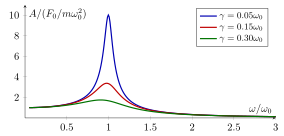
1.2.4典型示例
例 1.5 (空间站微重力实验中的受迫振动与三维谐振子). (1) 在空间站微重力实验平台上，带电粒子（电荷 \(-e\)）在振荡电场 \(E_x=E_0\cos(\omega t+\theta)\) 中运动，\(m\ddot x=-eE_x\)。积分两次得 \[x=x_0-\frac{eE_0}{m\omega^2}\cos\theta +\left(v_0+\frac{eE_0}{m\omega}\sin\theta\right)t +\frac{eE_0}{m\omega^2}\cos(\omega t+\theta),\] 即匀速漂移与同频受迫振荡的叠加。
(2) 作为给定外力的教学模型，设三维恢复力可近似为三个独立谐振子（本例不声称仅凭静电场就能形成三维稳定阱）： \[m\ddot x_i=-k_i x_i,\qquad x_i=A_i\cos(\omega_i t+\phi_i),\qquad \omega_i=\sqrt{k_i/m}.\] 对所有被激发的方向，若频率存在共同周期，轨道闭合；若三个频率有理独立，相位轨道在三维相位环面上稠密。仅有某一频率比无理并不足以推出三维环面上的稠密性；位置空间轨迹则是该相位轨道的投影。
例 1.6 (火星探测器进入段的阻力下落模型). 质量为 \(m\) 的火星探测器在降落伞展开后的简化模型中，从高度 \(h\) 处近似无初速下落，阻力与速度成正比，\(\mathbf{R}=-mk\mathbf{v}\)。取竖直向上为 \(x\) 轴正方向，初始位置为 \(x(0)=h\)，则重力为 \(-mg\)，阻力为 \(-mk\dot x\)，运动方程为 \[m\ddot x=-mg-mk\dot x,\] 即 \[\ddot x=-g-k\dot x.\] 分离变量并积分，利用 \(\dot x(0)=0\)， \[\ln\frac{g+k\dot x}{g}=-kt,\] 故 \[\dot x=-\frac{g}{k}\left(1-e^{-kt}\right).\] 再积分，利用 \(x(0)=h\)，得 \[x=h+\frac{g}{k^2}\left(1-e^{-kt}\right)-\frac{g}{k}t.\] 在形式上的长时间延拓中，\(\dot x\to -g/k\)，探测器趋于匀速下落，称为收尾速度。若取竖直向下为 \(x\) 轴，则速度与坐标的符号整体反转。本模型仅在触地之前使用。线性阻力适用于相应的低雷诺数或经验证的线性范围；实际降落伞及进入段常有速度平方阻力，不能据本例定量预测真实降落过程。
例 1.7 (月球摆的大振幅周期). 在月球表面，长为 \(l\) 的单摆，摆角 \(\theta\) 满足 \[\ddot\theta+\frac{g}{l}\sin\theta=0.\] 两边乘以 \(\dot\theta\) 并积分，得能量积分 \[\frac12\dot\theta^2-\frac{g}{l}\cos\theta =\frac12\dot\theta_0^2-\frac{g}{l}\cos\theta_0.\] 若从最大摆角 \(\theta_0\) 处由静止释放，则 \[\dot\theta^2=\frac{2g}{l}\left(\cos\theta-\cos\theta_0\right).\] 于是周期为 \[T=4\sqrt{\frac{l}{g}}\int_0^{\theta_0} \frac{\mathrm{d}\theta}{\sqrt{2(\cos\theta-\cos\theta_0)}}.\] 作 \(\sin(\theta/2)=\sin(\theta_0/2)\sin\phi\) 代换，可将它化成第一类完全椭圆积分；章末给出代换细节。小角近似 \(\sin\theta\approx\theta\) 给出简谐振动，\(T_0=2\pi\sqrt{l/g}\)；随着振幅增大，周期变长。按月球平均参数的近似 \(g_M\approx1.62\,\mathrm{m/s^2}\)，同样长度的摆周期约为地面的 \(\sqrt{g/g_M}\approx2.46\) 倍。
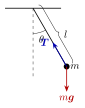
例 1.8 (霍尔推进器中的电子). 在霍尔推进器中，电子在互相垂直的均匀电场 \(\mathbf{E}\) 与磁场 \(\mathbf{B}\) 中运动。取 \(\mathbf{E}=E\hat{\mathbf{\imath}}\)、\(\mathbf{B}=B\hat{\mathbf{k}}\)，初速度 \(\mathbf{v}(0)=v_0\hat{\mathbf{\jmath}}\)，初始位置为原点。求电子的运动规律，并说明漂移速度的物理意义。
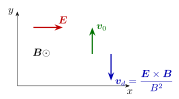
解：电子电荷为 \(-e\)，运动方程为 \[m\dot{\mathbf{v}}=-e(\mathbf{E}+\mathbf{v}\times\mathbf{B}).\] 写成分量： \[m\dot v_x=-eE-eBv_y,\qquad m\dot v_y=eBv_x,\qquad m\dot v_z=0.\] 令回旋频率 \(\omega_c=eB/m\)，并定义复速度 \(w=v_x+\mathrm{i}v_y\)，则 \[\dot w=-\frac{eE}{m}+\mathrm{i}\omega_c w .\] 其特解给出漂移速度 \(v_x=0\)、\(v_y=-E/B\)，即 \[\mathbf{v}_d=\frac{\mathbf{E}\times\mathbf{B}}{B^2}.\] 以初始条件 \(w(0)=\mathrm{i}v_0\) 积分，得 \[v_x(t)=-\left(v_0+\frac{E}{B}\right)\sin\omega_ct,\qquad v_y(t)=\left(v_0+\frac{E}{B}\right)\cos\omega_ct-\frac{E}{B}.\] 再积分一次： \[x(t)=\frac{v_0+E/B}{\omega_c}(\cos\omega_ct-1),\qquad y(t)=\frac{v_0+E/B}{\omega_c}\sin\omega_ct-\frac{E}{B}t .\] 因此电子的运动是“回旋”与“匀速漂移”的叠加：在垂直于 \(\mathbf{E}\) 与 \(\mathbf{B}\) 的方向上，它以速度 \(E/B\) 漂移；在以 \(\mathbf{v}_d\) 平动的低速参考系中，它作匀速圆周运动。本模型说明交叉场漂移的单粒子机制。真实霍尔推进器还涉及电离、碰撞及电子输运，离子束电荷中和主要由外置阴极提供电子，不能从这条漂移轨迹直接推出。进一步资料见本章末 NASA 技术介绍。
1.3功、能与势能
功和能提供了描述运动的另一套语言：力沿路径的累积效应可以用一个标量——功——来度量，保守力又可以进一步用势能表示。对许多问题，能量守恒比直接求解矢量微分方程更简洁，也更容易揭示运动的全局特征。本节从功的定义出发，引入势能、机械能守恒和势能曲线，为后续的守恒律与有心力问题作准备。
1.3.1功与功率
力 \(\mathbf{F}\) 在微小位移 \(\mathrm{d}\mathbf{r}\) 上做的功为 \[\mathrm{d}W=\mathbf{F}\cdot\mathrm{d}\mathbf{r}=F\cos\alpha\,\mathrm{d}s, \tag{1.53}\] 其中 \(\alpha\) 是力与位移的夹角。这里的 \(\mathrm{d}W\) 表示过程中的元功，一般不是某个仅依赖状态的函数的全微分。沿路径 \(L\) 从 \(A\) 到 \(B\) 的总功为 \[W_{A\to B}=\int_L \mathbf{F}\cdot\mathrm{d}\mathbf{r}. \tag{1.54}\] 功率为 \[P=\frac{\mathrm{d}W}{\mathrm{d}t}=\mathbf{F}\cdot\mathbf{v}. \tag{1.55}\]
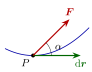
1.3.2保守力与势能
若力沿任意闭合路径做的功为零， \[\oint_L \mathbf{F}\cdot\mathrm{d}\mathbf{r}=0, \tag{1.56}\] 则称该力为保守力。等价地，保守力沿 \(A\to B\) 的功只与始末位置有关，与路径无关。于是可以定义势能 \(V(\mathbf{r})\)： \[V(\mathbf{r})-V(\mathbf{r}_0)=-\int_{\mathbf{r}_0}^{\mathbf{r}}\mathbf{F}\cdot\mathrm{d}\mathbf{r}', \tag{1.57}\] 或微分形式 \[\mathbf{F}=-\nabla V . \tag{1.58}\] 在直角坐标中， \[F_x=-\frac{\partial V}{\partial x},\qquad F_y=-\frac{\partial V}{\partial y},\qquad F_z=-\frac{\partial V}{\partial z}. \tag{1.59}\] 对定义在连通区域内的光滑位置力场，闭路功为零等价于全局单值势能存在。若势能存在，则旋度必为零；反向推论还须区域单连通等拓扑条件。在这样的区域内才可用判据 \[\nabla\times\mathbf{F}=0 \quad\Longleftrightarrow\quad \frac{\partial F_z}{\partial y}=\frac{\partial F_y}{\partial z},\quad \frac{\partial F_x}{\partial z}=\frac{\partial F_z}{\partial x},\quad \frac{\partial F_y}{\partial x}=\frac{\partial F_x}{\partial y}. \tag{1.60}\]
重力、静电力、弹簧弹力都是保守力；摩擦力、空气阻力一般不是保守力。当势能不显含时间且其余力不做功时，保守力功可由势能变化描述，因此机械能守恒；非保守力的功则把机械能转化为内能等其他形式。
1.3.3机械能守恒与势能曲线
质点动能为 \[T=\frac12m\mathbf{v}^2=\frac12m\dot{\mathbf{r}}^2. \tag{1.61}\] 由牛顿第二定律， \[\mathrm{d}T=\mathbf{F}\cdot\mathrm{d}\mathbf{r}=\mathrm{d}W . \tag{1.62}\] 若只有保守力做功，则 \(\mathrm{d}W=-\mathrm{d}V\)，于是 \[\mathrm{d}(T+V)=0\quad\Longrightarrow\quad T+V=E=\text{常量}. \tag{1.63}\] 这就是机械能守恒定律。 更一般地，若 \(\mathbf{F}=-\nabla V(\mathbf{r},t)+\mathbf{F}_{\rm nc}\)，则 \[\dot T=-\nabla V\cdot\mathbf{v}+\mathbf{F}_{\rm nc}\cdot\mathbf{v},\qquad \dot V=\nabla V\cdot\mathbf{v}+\frac{\partial V}{\partial t},\] \[\boxed{\frac{\mathrm{d}}{\mathrm{d}t}(T+V)=\frac{\partial V}{\partial t}+\mathbf{F}_{\rm nc}\cdot\mathbf{v}.} \tag{1.64}\] 这明确了守恒的条件：时间变化的势或做功的驱动约束都可向质点传递能量。磁力可以不保守却不做功，不能把所有非保守力都等同于耗散力。
例 1.9 (无旋不一定全局保守). 在去掉 \(z\) 轴的空间中，取 \(\mathbf{F}=K(-y,x,0)/(x^2+y^2)\)，其中 \(K\) 的量纲为能量。直接求偏导得到 \(\nabla\times\mathbf{F}=0\)。但在半径 \(a\) 的圆上，\(\mathbf{r}=(a\cos\phi,a\sin\phi,0)\)，有 \(\mathbf{F}\cdot\mathrm{d}\mathbf{r}=K\mathrm{d}\phi\)，故闭路功为 \(2\pi K\ne0\)。局部可写 \(V=-K\phi\)，绕轴一周却不单值。这说明使用旋度判据前必须先说明力场定义域。
一维运动的势能曲线 \(V(x)\) 提供了运动的定性图像（图中用固定能量与长度单位无量纲化）：由 \(E=T+V(x)\ge V(x)\) 可知，运动只能发生在 \(V(x)\le E\) 的区间；\(V(x)=E\) 的普通单根对应转折点（速度为零并反向）；重根处还可能是平衡或需无限时间才能到达的渐近位置，应单独判断；\(V'(x)=0\) 的点为平衡点，\(V''(x)>0\) 为稳定平衡，\(V''(x)<0\) 为不稳定平衡。若二阶导数为零，须检查更高阶，不能由二阶检验直接定论。
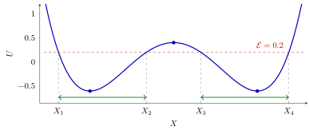
例 1.10 (保守力场的势能). 以下坐标和力按固定长度、力的单位给出数值，势能按相应的力乘长度单位表示。判断 \(\mathbf{F}=(x+2y+z+5)\hat{\mathbf{\imath}}+(2x+y+z)\hat{\mathbf{\jmath}}+(x+y+z-6)\hat{\mathbf{k}}\) 是否保守，并求势能。
解：直接计算得 \(\nabla\times\mathbf{F}=0\)，故力场保守。由 \(\mathbf{F}=-\nabla V\) 积分得 \[V=-\left[\frac{x^2}{2}+2xy+xz+5x+\frac{y^2}{2}+yz+\frac{z^2}{2}-6z\right]+C.\] 取 \(V(0,0,0)=0\)，则 \(C=0\)。
例 1.11 (月球车沿抛物线月坑下滑). 月球车（视为质点）质量为 \(m\)，沿光滑抛物线形月坑 \(x^2=4ay\) 从 \(x=2a\) 处由静止下滑。求到达坑底时的速度和月面支持力。
解：由 \(y=x^2/(4a)\) 得 \(y'=x/(2a)\)，\(y''=1/(2a)\)。在 \(x=2a\) 处，\(y=a\)，\(y'=1\)，切线与水平方向成 \(45^\circ\)。由机械能守恒， \[\frac12mv^2=mg(a-y),\] 故到达坑底 \(y=0\) 时 \[v=\sqrt{2ga}.\] 坑底处曲率半径为 \[\rho=\frac{[1+(y')^2]^{3/2}}{|y''|}\bigg|_{x=0} =\frac{1}{1/(2a)}=2a.\] 在坑底，法向（指向曲率中心，即竖直向上）方程为 \[m\frac{v^2}{\rho}=R-mg.\] 代入 \(v^2=2ga\)、\(\rho=2a\)，得 \[R=mg+\frac{m(2ga)}{2a}=2mg.\]
例 1.12 (月球车翻越球形月丘). 月球车（视为质点）质量为 \(m\)，从半径为 \(R\) 的光滑球形月丘顶部附近、极小角位移处由静止释放，并取该位移趋于零的下滑极限。求脱离月丘表面时的位置和速率。
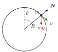
解：设月球车与竖直方向的夹角为 \(\theta\)。由机械能守恒， \[mgR(1-\cos\theta)=\frac12mv^2 .\] 沿径向（指向球心）应用牛顿第二定律： \[mg\cos\theta-N=m\frac{v^2}{R}.\] 代入 \(v^2=2gR(1-\cos\theta)\)，得 \[N=mg(3\cos\theta-2).\] 脱离月丘表面的条件是 \(N=0\)，故 \[\cos\theta_0=\frac23,\qquad \theta_0\approx48.2^\circ .\] 此时速率为 \[v_0=\sqrt{2gR(1-\cos\theta_0)} =\sqrt{\frac{2gR}{3}} .\] 若恰在最高点静止且毫无扰动，它将保持不稳定平衡；上面的下滑结果是微扰极限。在顶部极限 \(N=mg\)；随着下滑，支持力单调减小，在“赤道”以上就已降为零。此后月球车脱离月丘表面，在月面引力下作弹道运动。
例 1.13 (矩阵力场的势能条件). 设力场由常矩阵 \(A=(a_{ij})\) 给出： \[\mathbf{F}=A\mathbf{r},\qquad F_i=\sum_{j=1}^{3}a_{ij}x_j .\] 问 \(A\) 满足什么条件时 \(\mathbf{F}\) 保守？并求势能。
解：由 \(\nabla\times\mathbf{F}=0\) 得 \[(\nabla\times\mathbf{F})_x=\partial_yF_z-\partial_zF_y=a_{32}-a_{23}=0,\] 以及其他两个分量循环对称的条件。因此 \(\mathbf{F}\) 保守的充要条件是 \[a_{ij}=a_{ji},\] 即 \(A\) 为对称矩阵。此时 \[V(\mathbf{r})=-\frac12\mathbf{r}^T A\mathbf{r} =-\frac12\sum_{i,j=1}^{3}a_{ij}x_ix_j\] （相差一个常数），且 \(-\nabla V=A\mathbf{r}=\mathbf{F}\)。若 \(A\) 不对称，只有其对称部分对势能有贡献，反对称部分对应一个不能由势能导出的涡旋力。
1.4质点动力学基本定理与守恒定律
1.4.1动量定理与动量守恒
由牛顿第二定律 \(\mathbf{F}=\mathrm{d}\mathbf{p}/\mathrm{d}t\)，在时间区间 \([t_1,t_2]\) 上积分得 \[\mathbf{I}=\int_{t_1}^{t_2}\mathbf{F}\,\mathrm{d}t=\mathbf{p}_2-\mathbf{p}_1, \tag{1.65}\] 其中 \(\mathbf{I}\) 称为冲量。若合外力为零，则 \[\mathbf{p}=m\mathbf{v}=\text{常量}. \tag{1.66}\] 这就是动量守恒定律。
1.4.2角动量定理与角动量守恒
质点相对于原点 \(O\) 的角动量为 \[\mathbf{J}=\mathbf{r}\times\mathbf{p}=m\,\mathbf{r}\times\mathbf{v}. \tag{1.67}\] 力矩为 \[\mathbf{M}=\mathbf{r}\times\mathbf{F}. \tag{1.68}\] 由 \[\frac{\mathrm{d}\mathbf{J}}{\mathrm{d}t}=\frac{\mathrm{d}}{\mathrm{d}t}(\mathbf{r}\times m\mathbf{v}) =\mathbf{r}\times m\ddot{\mathbf{r}}=\mathbf{r}\times\mathbf{F}=\mathbf{M}, \tag{1.69}\] 得角动量定理： \[\frac{\mathrm{d}\mathbf{J}}{\mathrm{d}t}=\mathbf{M}. \tag{1.70}\] 若 \(\mathbf{M}=0\)，则 \(\mathbf{J}=\text{常量}\)。这里 \(O\) 是惯性系中的固定点。若改用移动点 \(A(t)\)，且角动量仍用绝对动量定义为 \(\mathbf{J}_A=(\mathbf{r}-\mathbf{r}_A)\times m\mathbf{v}\)，则乘积法则给出 \[\dot{\mathbf{J}}_A=(\mathbf{v}-\mathbf{v}_A)\times m\mathbf{v}+(\mathbf{r}-\mathbf{r}_A)\times\mathbf{F} =\mathbf{M}_A-\mathbf{v}_A\times\mathbf{p}.\] 因此不能不加条件地把固定点角动量定理套到移动参考点。第五章会说明为何质心是一个特别方便的参考点。特别地，若力始终通过某一固定点（有心力），则对该点的角动量守恒。
角动量守恒的核心是“力矩为零”，而不是“力为零”。有心力 \(\mathbf{F}=F(r)\hat{\mathbf{e}}_r\) 满足 \(\mathbf{r}\times\mathbf{F}=0\)，所以角动量守恒；但这并不意味着质点做匀速运动，也不意味着能量一定守恒。
1.4.3动能定理与守恒律的对称性
由 \[\mathrm{d}T=m\mathbf{v}\cdot\mathrm{d}\mathbf{v}=\mathbf{F}\cdot\mathrm{d}\mathbf{r}=\mathrm{d}W, \tag{1.71}\] 得动能定理： \[W_{A\to B}=T_B-T_A=\frac12mv_B^2-\frac12mv_A^2 . \tag{1.72}\] 若只有保守力做功，则 \(W=-\Delta V\)，从而 \(T+V=E\)。
进一步看，三个守恒律分别对应时空对称性：空间平移不变 \(\Rightarrow\) 动量守恒；空间转动不变 \(\Rightarrow\) 角动量守恒；时间平移不变 \(\Rightarrow\) 能量守恒。这一对应关系在分析力学中由诺特定理精确表述，是“对称性决定相互作用”的思想源头。
例 1.14 (有心力作用下的平面运动). 质点在有心力 \(\mathbf{F}=F(r)\hat{\mathbf{e}}_r\) 作用下运动。由于 \(\mathbf{M}=\mathbf{r}\times\mathbf{F}=0\)，角动量 \[\mathbf{J}=\mathbf{r}\times m\mathbf{v}\] 守恒。若 \(\mathbf{J}\ne0\)，因 \(\mathbf{r}\cdot\mathbf{J}=0\)，位矢始终垂直同一个常矢量，轨道位于过力心的固定平面内。若 \(\mathbf{J}=0\)，运动为沿力心直线的径向运动，需单独处理；下式的角度参数化假设 \(J\ne0\)。
在极坐标中，\(\mathbf{J}=mr^2\dot\theta\,\hat{\mathbf{k}}\)，故 \[mr^2\dot\theta=J=\text{常量}.\] 扫过的面积速度为 \[\frac{\mathrm{d}A}{\mathrm{d}t}=\frac12r^2\dot\theta=\frac{J}{2m}=\text{常量},\] 这正是开普勒第二定律的力学基础。
1.5质点系与质心运动
本节从每个质点的牛顿第二定律出发，逐步导出质点系的动量、角动量和动能定理。设系统由 \(N\) 个质点组成，第 \(i\) 个质点的质量为 \(m_i\)、位矢为 \(\mathbf{r}_i\)。对每个质点写出牛顿第二定律： \[m_i\ddot{\mathbf{r}}_i=\mathbf{F}_i^{(e)}+\sum_{j\ne i}\mathbf{F}_{ij}, \qquad i=1,\dots,N, \tag{1.73}\] 其中 \(\mathbf{F}_i^{(e)}\) 是外力，\(\mathbf{F}_{ij}\) 是第 \(j\) 个质点对第 \(i\) 个质点的内力。由牛顿第三定律 \[\mathbf{F}_{ij}=-\mathbf{F}_{ji}. \tag{1.74}\] 以下结论由式 (1.73) 和 (1.74) 推出；在讨论内力矩时，还需要假设内力满足强形式。
1.5.1内力、外力与质心
先证明内力之和为零。把内力按 \(i<j\) 成对求和： \[\sum_{i=1}^{N}\sum_{j\ne i}\mathbf{F}_{ij} =\sum_{i<j}\left(\mathbf{F}_{ij}+\mathbf{F}_{ji}\right)=0. \tag{1.75}\] 若进一步假设内力沿两质点的连线（强形式），则 \[\mathbf{F}_{ij}\parallel \mathbf{r}_i-\mathbf{r}_j . \tag{1.76}\] 于是每一对内力对固定点 \(O\) 的力矩之和为 \[\mathbf{r}_i\times\mathbf{F}_{ij}+\mathbf{r}_j\times\mathbf{F}_{ji} =(\mathbf{r}_i-\mathbf{r}_j)\times\mathbf{F}_{ij}=0. \tag{1.77}\] 因此所有内力矩之和也为零。以下各质点质量及系统成员固定；开放系统另行分析。
注意：若内力是运动电荷之间的磁力，强形式一般不成立，必须把电磁场的角动量计入；本节的质点系角动量定理默认内力为有心力。
定义系统的质心 \[\mathbf{R}=\frac{1}{M}\sum_{i=1}^{N}m_i\mathbf{r}_i,\qquad M=\sum_{i=1}^{N}m_i . \tag{1.78}\] 对连续体，取 \(m_i\to\mathrm{d}m\) 的极限，求和化为积分： \[\mathbf{R}=\frac{1}{M}\int\mathbf{r}\,\mathrm{d}m,\qquad M=\int\mathrm{d}m . \tag{1.79}\] 质心不一定在物体上，但它把系统的整体运动浓缩为一个代表点。
例 1.15 (球形贮箱球冠端盖的质心). 航天器中的一个薄壁球形贮箱，被距球心 \(b\) 的平面隔板截出一个球冠形端盖（\(0<b<a\)）。设球面面密度为 \(\sigma\)，求端盖质心到球心的距离。
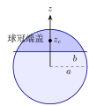
解：设球面面密度为 \(\sigma\)，取球心为原点、对称轴为 \(z\) 轴。球面面积元为 \[\mathrm{d}S=2\pi a^2\sin\theta\,\mathrm{d}\theta,\qquad z=a\cos\theta,\] 其中 \(\theta\) 从 \(0\) 到 \(\theta_0\)，且 \(\cos\theta_0=b/a\)。球冠的面积为 \[S=2\pi a^2\int_0^{\theta_0}\sin\theta\,\mathrm{d}\theta =2\pi a(a-b),\] 质量为 \(M=\sigma S\)。质心的 \(z\) 坐标为 \[z_c=\frac{1}{S}\int z\,\mathrm{d}S =\frac{1}{2\pi a(a-b)} \int_0^{\theta_0}a\cos\theta\,2\pi a^2\sin\theta\,\mathrm{d}\theta.\] 计算积分： \[\int_0^{\theta_0}\cos\theta\sin\theta\,\mathrm{d}\theta =\frac12\sin^2\theta_0 =\frac12\left(1-\frac{b^2}{a^2}\right).\] 代入得 \[z_c=\frac{a^2}{a-b}\cdot\frac12\left(1-\frac{b^2}{a^2}\right) =\frac{a+b}{2}.\] 本例忽略端盖厚度且面密度均匀。当 \(b=0\) 时，球冠退化为半球面，\(z_c=a/2\)，这是熟悉的半球壳结果。质心位置直接影响贮箱和航天器的质量特性与姿态控制。
对式 (1.78) 求导两次，并利用式 (1.73)： \[M\ddot{\mathbf{R}} =\sum_i m_i\ddot{\mathbf{r}}_i =\sum_i\mathbf{F}_i^{(e)}+\sum_i\sum_{j\ne i}\mathbf{F}_{ij}. \tag{1.80}\] 由式 (1.75)，内力和为零，于是 \[M\ddot{\mathbf{R}}=\sum_i\mathbf{F}_i^{(e)}=\mathbf{F}^{(e)}. \tag{1.81}\] 这就是质心运动定理：质心像一个质量为 \(M\)、受全部外力矢量和作用的质点。烟花爆炸、航天器分离时，只要外力变化不大，系统质心的轨迹就与爆炸前相同；内部碎片如何飞散不影响质心运动。
1.5.2质点系动量定理与动量守恒 ✦ 交互模拟：火箭方程与质量流 ↗
由质心定义，系统的总动量为 \[\mathbf{P}=\sum_i m_i\dot{\mathbf{r}}_i =\frac{\mathrm{d}}{\mathrm{d}t}\sum_i m_i\mathbf{r}_i =M\dot{\mathbf{R}}. \tag{1.82}\] 对时间求导，并利用质心运动定理 (1.81)： \[\frac{\mathrm{d}\mathbf{P}}{\mathrm{d}t}=M\ddot{\mathbf{R}}=\mathbf{F}^{(e)}. \tag{1.83}\] 写成冲量形式： \[\mathbf{P}(t_2)-\mathbf{P}(t_1)=\int_{t_1}^{t_2}\mathbf{F}^{(e)}\,\mathrm{d}t . \tag{1.84}\] 若外力和为零，则 \[\mathbf{P}=M\mathbf{V}_c=\text{常量}. \tag{1.85}\] 这就是质点系的动量守恒定律。内力可以很大，却不会改变系统的总动量；动量守恒是对整个系统而言的，单个质点的动量一般并不守恒。
例 1.16 (火箭方程). 取竖直向上为正，在所考察高度范围内把 \(g\) 近似视为常量。设在 \(\mathrm{d}t\) 内火箭质量变化为 \(\mathrm{d}m<0\)，喷出气体相对火箭的速度为 \(-v_e\)（\(v_e>0\)）。喷出前系统动量为 \(mv\)；喷出后火箭动量为 \((m+\mathrm{d}m)(v+\mathrm{d}v)\)，气体动量为 \((-\mathrm{d}m)(v-v_e)\)。外力冲量为 \(-mg\,\mathrm{d}t\)。由动量定理， \[(m+\mathrm{d}m)(v+\mathrm{d}v)+(-\mathrm{d}m)(v-v_e)-mv=-mg\,\mathrm{d}t .\] 展开并保留一阶小量： \[m\,\mathrm{d}v+v_e\,\mathrm{d}m=-mg\,\mathrm{d}t,\] 即 \[m\dot v=-v_e\dot m-mg. \tag{1.86}\] 忽略重力时，分离变量并积分： \[\Delta v=v_e\ln\frac{m_0}{m_f}, \tag{1.87}\] 其中 \(m_0,m_f\) 分别为初始质量和燃料耗尽后的质量。若 \(v_e=3.0\,\mathrm{km/s}\)、\(m_0/m_f=10\)，则 \[\Delta v=3.0\ln10\approx6.9\,\mathrm{km/s}.\] 质量比越大、排气速度越高，速度增量越大；这就是多级火箭和电推进技术追求高比冲的原因。
1.5.3质点系角动量定理与角动量守恒
系统对固定点 \(O\) 的总角动量为 \[\mathbf{J}=\sum_i\mathbf{r}_i\times m_i\dot{\mathbf{r}}_i . \tag{1.88}\] 对时间求导，并利用式 (1.73)： \[\frac{\mathrm{d}\mathbf{J}}{\mathrm{d}t} =\sum_i\mathbf{r}_i\times m_i\ddot{\mathbf{r}}_i =\sum_i\mathbf{r}_i\times\mathbf{F}_i^{(e)} +\sum_i\mathbf{r}_i\times\sum_{j\ne i}\mathbf{F}_{ij}. \tag{1.89}\] 由式 (1.77)，内力矩成对抵消，于是 \[\frac{\mathrm{d}\mathbf{J}}{\mathrm{d}t}=\mathbf{M}^{(e)},\qquad \mathbf{M}^{(e)}=\sum_i\mathbf{r}_i\times\mathbf{F}_i^{(e)}. \tag{1.90}\] 若外力对 \(O\) 的总力矩为零，则 \(\mathbf{J}\) 守恒。
为了分离整体转动与内部转动，令 \[\mathbf{r}_i=\mathbf{R}+\mathbf{r}_i',\qquad \mathbf{v}_i=\mathbf{V}_c+\mathbf{v}_i'. \tag{1.91}\] 由质心定义， \[\sum_i m_i\mathbf{r}_i'=0. \tag{1.92}\] 对时间求导得 \[\sum_i m_i\mathbf{v}_i'=0. \tag{1.93}\] 把 \(\mathbf{r}_i,\mathbf{v}_i\) 代入 \(\mathbf{J}\)： \[\mathbf{J}=\sum_i(\mathbf{R}+\mathbf{r}_i')\times m_i(\mathbf{V}_c+\mathbf{v}_i'). \tag{1.94}\] 展开后，含 \(\sum m_i\mathbf{r}_i'\) 和 \(\sum m_i\mathbf{v}_i'\) 的交叉项均为零，故 \[\mathbf{J}=\mathbf{R}\times\mathbf{P}+\mathbf{J}',\qquad \mathbf{J}'=\sum_i\mathbf{r}_i'\times m_i\mathbf{v}_i', \tag{1.95}\] 其中 \(\mathbf{P}=M\mathbf{V}_c\)。第一项是质心的轨道角动量，第二项是系统相对质心的角动量。
例 1.17 (受冲量的双质点杆). 两个质量均为 \(m\) 的质点 \(A,B\) 由长为 \(a\) 的轻杆相连，静止放在光滑水平桌面上。在 \(B\) 点施加一个垂直于杆的冲量 \(\mathbf{I}\)。求此后质心的速度和杆的角速度。
解：系统所受外力冲量为 \(\mathbf{I}\)，由动量定理 \[2m\mathbf{V}_c=\mathbf{I}\quad\Longrightarrow\quad \mathbf{V}_c=\frac{\mathbf{I}}{2m}.\] 质心 \(C\) 位于杆的中点。对质心的转动惯量为 \[I_C=2m\left(\frac{a}{2}\right)^2=\frac{ma^2}{2}.\] 冲量对质心的角冲量为 \((a/2)I\)，故 \[I_C\omega=\frac{a}{2}I \quad\Longrightarrow\quad \omega=\frac{I}{ma}.\] 此后质心以 \(\mathbf{V}_c\) 匀速平动，杆绕质心以 \(\omega\) 匀速转动；两质点相对质心的位置矢量作匀速圆周运动。
例 1.18 (自由圆环上的机器人：先找对质心). 细圆环质量 \(m\)、半径 \(R\)，质量同为 \(m\) 的点状机器人沿环爬行。系统初始静止，无外力及外力矩。令环的转角为 \(\varphi\)，机器人相对环的角为 \(\theta\)，其相对环心连线的空间方位为 \(\alpha=\varphi+\theta\)。机器人相对圆环爬一周时，环转过多少？
解：用 \(C\) 表示环心，\(G\) 表示总质心。令 \(\mathbf{e}(\alpha)\) 为由环心指向机器人的单位矢量，则 \[\mathbf{r}_b=\mathbf{r}_C+R\mathbf{e},\quad \mathbf{R}_G=\frac{\mathbf{r}_C+\mathbf{r}_b}{2},\quad \mathbf{r}_C-\mathbf{R}_G=-\frac R2\mathbf{e},\quad \mathbf{r}_b-\mathbf{R}_G=\frac R2\mathbf{e}.\] 两者都距总质心 \(R/2\)，不能把机器人的距质心距离误当作 \(R\)。关于 \(G\) 的角动量是环自转与两部分轨道角动量之和： \[J_G=mR^2\dot\varphi+2m(R/2)^2\dot\alpha =mR^2\left(\dot\varphi+\tfrac12\dot\alpha\right)=0.\] 因此 \(\mathrm{d}\varphi=-\mathrm{d}\alpha/2\)，又 \(\mathrm{d}\theta=\mathrm{d}\alpha-\mathrm{d}\varphi=3\mathrm{d}\alpha/2\)。当 \(\Delta\theta=2\pi\) 时， \[\boxed{\Delta\alpha=\frac{4\pi}{3},\qquad \Delta\varphi=-\frac{2\pi}{3}=-120^\circ.}\] 总质心在空间静止，但环心在动。能量可由机器人内部驱动提供，不能另加“系统动能恒为零”的条件。计算只依赖总爬行角，与具体速度过程无关。
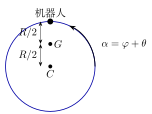
1.5.4质点系动能定理与柯尼希定理
系统总动能为 \[T=\sum_i\frac12 m_i\dot{\mathbf{r}}_i^2 . \tag{1.96}\] 把 \(\dot{\mathbf{r}}_i=\mathbf{V}_c+\mathbf{v}_i'\) 代入： \[T=\frac12\sum_i m_i(\mathbf{V}_c+\mathbf{v}_i')^2 =\frac12MV_c^2+\frac12\sum_i m_i v_i'^2 +\mathbf{V}_c\cdot\sum_i m_i\mathbf{v}_i'. \tag{1.97}\] 最后一项因 \(\sum_i m_i\mathbf{v}_i'=0\) 而消失，于是 \[T=\frac12MV_c^2+T',\qquad T'=\sum_i\frac12 m_i v_i'^2 . \tag{1.98}\] 这就是柯尼希定理：总动能等于质心整体运动的动能与相对质心的内部动能之和。
下面从牛顿第二定律导出动能定理。对每个质点， \[m_i\ddot{\mathbf{r}}_i\cdot\mathrm{d}\mathbf{r}_i=\mathbf{F}_i\cdot\mathrm{d}\mathbf{r}_i, \tag{1.99}\] 对 \(i\) 求和： \[\mathrm{d}T=\sum_i m_i\ddot{\mathbf{r}}_i\cdot\mathrm{d}\mathbf{r}_i =\sum_i\mathbf{F}_i\cdot\mathrm{d}\mathbf{r}_i =\mathrm{d}W^{(e)}+\mathrm{d}W^{(i)}. \tag{1.100}\] 内力功一般不为零。对一对内力， \[\mathrm{d}W_{ij} =\mathbf{F}_{ij}\cdot\mathrm{d}\mathbf{r}_i+\mathbf{F}_{ji}\cdot\mathrm{d}\mathbf{r}_j =\mathbf{F}_{ij}\cdot\mathrm{d}(\mathbf{r}_i-\mathbf{r}_j). \tag{1.101}\] 对于定距离的理想中心约束，\(\mathrm{d}(\mathbf{r}_i-\mathbf{r}_j)\) 与 \(\mathbf{r}_i-\mathbf{r}_j\) 垂直，而 \(\mathbf{F}_{ij}\) 沿 \(\mathbf{r}_i-\mathbf{r}_j\)，故内力功为零；对弹簧等系统，内力功则等于对应势能的减少量。
若作用可由不显含时间的总势能描述，可以引入总势能 \[V=\sum_i V_i^{(e)}+\sum_{i<j}V_{ij}, \tag{1.102}\] 其中 \(V_i^{(e)}\) 是外势能，\(V_{ij}\) 是第 \(i,j\) 个质点间的相互作用势能。由保守力做功与势能的关系 \(\mathrm{d}W=-\mathrm{d}V\)，结合式 (1.100) 得 \[\mathrm{d}(T+V)=0, \tag{1.103}\] 即 \[E=T+V=\text{常量}. \tag{1.104}\] 这就是质点系的机械能守恒定律。
1.5.5两体问题与约化质量 ✦ 交互模拟：两体问题与系外行星 ↗
考虑两个质点 \(m_1,m_2\)，只受彼此的内力作用。由牛顿第二定律， \[m_1\ddot{\mathbf{r}}_1=\mathbf{F}_{12},\qquad m_2\ddot{\mathbf{r}}_2=\mathbf{F}_{21},\qquad \mathbf{F}_{21}=-\mathbf{F}_{12}. \tag{1.105}\] 定义相对位矢和质心 \[\mathbf{r}=\mathbf{r}_1-\mathbf{r}_2,\qquad \mathbf{R}=\frac{m_1\mathbf{r}_1+m_2\mathbf{r}_2}{m_1+m_2}. \tag{1.106}\] 两式相减： \[\ddot{\mathbf{r}}=\ddot{\mathbf{r}}_1-\ddot{\mathbf{r}}_2 =\frac{\mathbf{F}_{12}}{m_1}-\frac{\mathbf{F}_{21}}{m_2} =\left(\frac1{m_1}+\frac1{m_2}\right)\mathbf{F}_{12}. \tag{1.107}\] 定义约化质量 \[\mu=\frac{m_1m_2}{m_1+m_2}, \tag{1.108}\] 则 \[\mu\ddot{\mathbf{r}}=\mathbf{F}_{12}. \tag{1.109}\] 同时， \[(m_1+m_2)\ddot{\mathbf{R}} =m_1\ddot{\mathbf{r}}_1+m_2\ddot{\mathbf{r}}_2 =\mathbf{F}_{12}+\mathbf{F}_{21}=0, \tag{1.110}\] 所以质心作匀速直线运动。若两体内力进一步仅依赖相对距离且沿连线，两体问题因此化为一个质量为 \(\mu\) 的质点在中心力 \(\mathbf{F}_{12}\) 中的单体问题；相对运动的具体轨道可直接引用后续有心力部分的结果，无需重新推导开普勒定律。
相对坐标与质心坐标还能反解原位置： \[\mathbf{r}_1=\mathbf{R}+\frac{m_2}{m_1+m_2}\mathbf{r},\qquad \mathbf{r}_2=\mathbf{R}-\frac{m_1}{m_1+m_2}\mathbf{r}.\] 微分后代入总动能，交叉项因 \(m_1m_2/(m_1+m_2)-m_2m_1/(m_1+m_2)=0\) 抵消，剩下 \[T=\tfrac12(m_1+m_2)\dot{\mathbf{R}}^{\,2}+\tfrac12\mu\dot{\mathbf{r}}^{\,2},\qquad \mathbf{J}_G=\mathbf{r}\times\mu\dot{\mathbf{r}}. \tag{1.111}\] 若势能为 \(V(r)\)，相对能量 \(E_{\rm rel}=\mu\dot{\mathbf{r}}^{\,2}/2+V(r)\) 独立守恒；不能把一个粒子相对地面的速度直接当作相对速度。
例 1.19 (双星系统的动能). 两颗星质量分别为 \(m_1,m_2\)，相距 \(r\)，绕共同质心作匀速圆周运动。求系统的总动能。
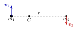
解：质心静止，故由柯尼希定理 \(T=T'\)。相对运动满足式 (1.109)。由动量守恒 \(m_1v_1=m_2v_2\)，且 \(v=v_1+v_2\)，可解出 \[v_1=\frac{m_2}{m_1+m_2}v,\qquad v_2=\frac{m_1}{m_1+m_2}v .\] 相对运动是半径为 \(r\) 的圆周运动，向心加速度为 \(v^2/r\)，引力大小为 \(Gm_1m_2/r^2\)，故 \[\frac{m_1m_2}{m_1+m_2}\frac{v^2}{r} =\frac{Gm_1m_2}{r^2},\] 即 \(v^2=G(m_1+m_2)/r\)。代入动能： \[T=\frac12m_1v_1^2+\frac12m_2v_2^2 =\frac12\frac{m_1m_2}{m_1+m_2}v^2 =\frac{Gm_1m_2}{2r}.\] 这个结果也可以看作“约化质量 \(\mu\) 的动能”。
例 1.20 (空间站释放立方星：质心系中的反冲). 空间站质量为 \(M\)，一颗立方星质量为 \(m\)，二者由压缩弹簧连接，初始相对静止。弹簧释放能量 \(E_s\) 后把立方星推出。忽略轨道曲率、潮汐力和空气阻力，求二者相对速度、各自速度，并说明质心运动。
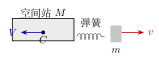
解：在质心系中，系统总动量为零。设空间站和立方星的速度分别为 \(V\) 和 \(v\)，方向相反，则 \[MV+mv=0.\] 设二者分离的相对速度为 \(u=v-V\)，解得 \[v=\frac{M}{M+m}u,\qquad V=-\frac{m}{M+m}u.\] 弹簧释放的能量全部转化为质心系中的动能： \[E_s=\frac12MV^2+\frac12mv^2 =\frac12\frac{Mm}{M+m}u^2 =\frac12\mu u^2,\] 其中 \(\mu=Mm/(M+m)\) 为约化质量。因此 \[u=\sqrt{\frac{2E_s}{\mu}},\qquad v=\frac{M}{M+m}u,\qquad V=-\frac{m}{M+m}u.\] 质心不受额外外力，继续沿原轨道运动；释放过程只改变系统内部相对运动，不改变质心轨道。以下是教学设定，不是空间站实测数据。若取 \(M=4.2\times10^5\,\mathrm{kg}\)、\(m=10\,\mathrm{kg}\)、\(E_s=10\,\mathrm{J}\)，则 \[u\approx1.4\,\mathrm{m/s},\qquad |V|\approx3.4\times10^{-5}\,\mathrm{m/s}.\] 空间站的反冲速度极小，而立方星获得约 \(1.4\,\mathrm{m/s}\) 的分离速度。这里“质心不动”仅指所选质心系；在地心惯性系中质心仍运动。短时忽略潮汐的条件下，可把它近似为沿原轨道运动。
例 1.21 (地月系统的质心). 地球质量 \(M_E\approx5.97\times10^{24}\,\mathrm{kg}\)，月球质量 \(M_m\approx7.35\times10^{22}\,\mathrm{kg}\)，地月距离 \(d\approx3.84\times10^8\,\mathrm{m}\)。约化质量为 \[\mu=\frac{M_EM_m}{M_E+M_m}\approx7.25\times10^{22}\,\mathrm{kg}.\] 质心到地心的距离为 \[d_E=\frac{M_m}{M_E+M_m}d\approx4.67\times10^6\,\mathrm{m},\] 小于地球平均半径（约 \(6.37\times10^6\,\mathrm{m}\)），所以地月质心位于地球内部。严格说，地球和月球都绕这个共同质心运动；把月球看作绕静止地球只是近似。
1.5.6碰撞：质心系为什么能简化计算？ ✦ 交互模拟：碰撞与变质量 ↗
碰撞时间很短，若外力冲量相对接触冲量可忽略，则总动量在碰撞前后近似守恒。不应把这一近似写成“碰撞时外力一定为零”。考虑一维正碰，初速度为 \(u_1,u_2\)，末速度为 \(v_1,v_2\)，取 \(u_1-u_2>0\) 表示接近。质心速度 \[V_G=\frac{m_1u_1+m_2u_2}{m_1+m_2} =\frac{m_1v_1+m_2v_2}{m_1+m_2}\] 在碰撞中不变。用恢复系数描述分离相对速度： \[v_1-v_2=-e(u_1-u_2),\qquad 0\le e\le1.\] 令 \(w=u_1-u_2\)，解动量及相对速度两式可得 \[\begin{aligned} v_1&=V_G-\frac{m_2}{m_1+m_2}ew,\\ v_2&=V_G+\frac{m_1}{m_1+m_2}ew. \end{aligned}\tag{1.112}\] 由式 (1.111)，质心平动能不变，损失的动能只来自相对运动： \[T_{\rm before}-T_{\rm after}=\tfrac12\mu(1-e^2)w^2. \tag{1.113}\] 完全弹性碰撞 \(e=1\) 保持总动能；完全非弹性正碰 \(e=0\) 时两物体同速。耗散的动能可变成形变和内能，总能量仍守恒。该单一恢复系数模型不包括斜碰中的摩擦和转动。
例 1.22 (一维碰撞的极限检查). 质量 \(m\) 的粒子以速度 \(u>0\) 撞上静止靶 \(M\)，取 \(e=1\)。上式给出 \[v_1=\frac{m-M}{m+M}u,\qquad v_2=\frac{2m}{m+M}u.\] 若 \(m=M\)，二者交换速度；若 \(M\gg m\)，入射粒子近似以 \(-u\) 反弹，而靶速度很小。若改取 \(e=0\)，共同速度为 \(mu/(m+M)\)，动能损失为 \(mMu^2/[2(m+M)]\)。质量相等且靶静止时，完全结合损失初始动能的一半，不能同时再要求动能守恒。
实验室看到两物体既共同前进又相互接近，容易混淆这两部分运动。在质心系中，二者动量大小相等、方向相反；一维弹性碰撞只将它们反向。解完内部碰撞再加回同一个 \(V_G\)，即可返回实验室系。质心系是惯性系的前提是该阶段合外力为零或可忽略。
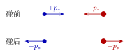
1.5.7位力定理 ✦ 交互模拟：位力定理与幂次势 ↗
定义位力 \[G=\sum_i\mathbf{p}_i\cdot\mathbf{r}_i . \tag{1.114}\] 利用 \(\dot{\mathbf{p}}_i=\mathbf{F}_i\) 和 \(\mathbf{p}_i=m_i\dot{\mathbf{r}}_i\)，对时间求导： \[\dot G=\sum_i\dot{\mathbf{p}}_i\cdot\mathbf{r}_i+\sum_i\mathbf{p}_i\cdot\dot{\mathbf{r}}_i =\sum_i\mathbf{F}_i\cdot\mathbf{r}_i+2T . \tag{1.115}\] 对时长 \(\mathcal T\) 取平均，严格有 \[\frac{G(t_0+\mathcal T)-G(t_0)}{\mathcal T} =2\langle T\rangle_{\mathcal T} +\left\langle\sum_i\mathbf{F}_i\cdot\mathbf{r}_i\right\rangle_{\mathcal T}.\] 只有当左边在 \(\mathcal T\to\infty\) 时趋零，且右边平均存在，才得到位力定理 \[2\langle T\rangle+\left\langle\sum_i\mathbf{F}_i\cdot\mathbf{r}_i\right\rangle=0. \tag{1.116}\] \(G\) 有界是充分条件，位置有界本身并不自动保证动量有界，特别是存在碰撞奇点时。周期运动可直接取整数周期平均。
若全部力来自不显含时间的 \(n\) 次齐次势 \(V\)，欧拉齐次函数定理给出 \[\sum_i\mathbf{r}_i\cdot\nabla_iV=nV,\qquad 2\langle T\rangle=n\langle V\rangle.\] 平方反比引力的势能次数为 \(-1\)，故 \(2\langle T\rangle+\langle V\rangle=0\)。对引力系统应使用质心内部动能，否则整体平动会污染估计。
若用模型 \(V\simeq-CGM^2/R\)，其中 \(C\) 依赖密度分布，并定义三维内部均方速度 \(\langle v^2\rangle\)，则 \(T=M\langle v^2\rangle/2\)，估计为 \(M\simeq R\langle v^2\rangle/(CG)\)。若观测量是一维视向速度弥散 \(\sigma_{\rm los}\)，还需各向同性等假设才有 \(\langle v^2\rangle=3\sigma_{\rm los}^2\)。因此没有不注明速度定义与结构系数的通用质量公式。进一步学习需统计平均与引力势能积分，可先用均匀球完成章末习题。
1.6非惯性参照系
前面讨论的参考系都默认是惯性系。实际观测中，我们常常身处加速或转动的参考系，例如加速的车厢、旋转的地球和太空电梯。只要在牛顿第二定律中引入相应的惯性力，非惯性系中的运动方程仍可写成“合力等于质量乘加速度”的形式。本节先建立相对运动的普遍关系，再讨论平动、转动参考系中的惯性力，并以地球自转和太空电梯为例说明其物理效应。
1.6.1相对运动与伽利略变换
设有两个参考系 \(S\) 与 \(S'\)。\(S'\) 的原点 \(O'\) 在 \(S\) 中的位矢为 \(\mathbf{R}(t)\)。同一质点 \(P\) 在 \(S\) 中的位矢为 \(\mathbf{r}\)，在 \(S'\) 中的位矢为 \(\mathbf{r}'\)，则 \[\mathbf{r}=\mathbf{R}+\mathbf{r}'. \tag{1.117}\] 对时间求导： \[\mathbf{v}=\dot{\mathbf{R}}+\mathbf{v}',\qquad \mathbf{a}=\ddot{\mathbf{R}}+\mathbf{a}'. \tag{1.118}\] 若 \(S'\) 相对 \(S\) 作匀速直线平动，则 \(\ddot{\mathbf{R}}=0\)，于是 \(\mathbf{a}=\mathbf{a}'\)。这说明加速度在相互作匀速直线平动的参考系中相同，为伽利略相对性原理的运动学基础。
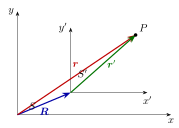
最重要的特殊情形是伽利略变换。若 \(S'\) 相对 \(S\) 以恒定速度 \(\mathbf{V}\) 沿 \(x\) 轴平动，且 \(t=0\) 时两原点重合，则 \[x'=x-Vt,\qquad y'=y,\qquad z'=z,\qquad t'=t. \tag{1.119}\] 对时间求导得 \[v_x'=v_x-V,\qquad v_y'=v_y,\qquad v_z'=v_z, \tag{1.120}\] 再求导得 \[a_x'=a_x,\qquad a_y'=a_y,\qquad a_z'=a_z . \tag{1.121}\] 因此，在伽利略变换下加速度不变，牛顿第二定律的形式也不变。这就是伽利略相对性原理：一切惯性系对力学规律等价，不存在“绝对静止”的惯性系。
伽利略变换隐含了绝对时间 \(t'=t\) 和绝对空间（长度不变）的假设。狭义相对论表明，当速度接近光速时，这些假设失效，应由洛伦兹变换替代。但在 \(v\ll c\) 的经典力学范围内，伽利略变换是极好的近似。本书前六章除特别说明外均采用经典时空观。
例 1.23 (理想径向收绳：角动量如何限制回收过程？). 在惯性平面内，一载荷以质量 \(m\) 的质点建模，轻绳另一端固定于原点。绳始终绷紧，张力沿径向；卷扬机规定 \(\dot r=-u\)，\(u>0\)，初始 \(r=r_0\)，比角动量为 \(h>0\)。忽略其他力，求可行收绳阶段的轨道与张力。
解：力矩为零，故 \(r^2\dot\theta=h\)。而 \(r=r_0-ut\)，因此 \[\theta(t)-\theta_0=\int_0^t\frac{h\,\mathrm{d}t'}{(r_0-ut')^2} =\frac hu\left(\frac1{r(t)}-\frac1{r_0}\right).\] 由 \(m(\ddot r-r\dot\theta^2)=-T\) 且 \(\ddot r=0\) 得 \[T=\frac{mh^2}{r^3},\qquad \frac{\mathrm{d}}{\mathrm{d}t}\left[\frac m2(u^2+h^2/r^2)\right] =\frac{mh^2u}{r^3}=Tu.\] 收绳机构对载荷做正功，横向速率随 \(r\) 减小而增大。模型形式上在 \(r\to0\) 时要求无限张力与能量；实际必须在有限捕获半径停止、减速或转移动量。不存在只比较“横向速度与收绳速度”就能判断捕获的普遍准则；本题也不描述空间站轨道系中的完整相对动力学。
1.6.2加速平动参照系
设惯性系 \(S\) 中质点受力 \(\mathbf{F}\)，加速度为 \(\mathbf{a}\)。另一参考系 \(S'\) 相对 \(S\) 以加速度 \(\mathbf{a}_0\) 平动，则质点在 \(S'\) 中的加速度为 \[\mathbf{a}'=\mathbf{a}-\mathbf{a}_0.\] 代入牛顿第二定律， \[m\mathbf{a}'=\mathbf{F}-m\mathbf{a}_0 . \tag{1.122}\] 若把 \(-m\mathbf{a}_0\) 称为惯性力，则形式上仍有“合力 = 质量 \(\times\) 加速度”。惯性力不是物体间的相互作用，没有反作用力，只在非惯性系中出现。
在加速的车厢中，乘客感到一个向后的“力”，这就是惯性力。它可以局域地等效于引力场：\(-\,m\mathbf{a}_0\) 与 \(m\mathbf{g}\)（均匀引力）在动力学上不可区分。这一观察是爱因斯坦等效原理的起点。
1.6.3转动参照系
设 \(S'\) 相对惯性系 \(S\) 以角速度 \(\mathbf{\omega}\) 转动，且两原点重合。取 \(S'\) 的基矢量为 \(\mathbf{e}_i'\)，则基矢量随 \(S'\) 转动： \[\frac{\mathrm{d}\mathbf{e}_i'}{\mathrm{d}t}=\mathbf{\omega}\times\mathbf{e}_i'. \tag{1.123}\] 把任意矢量写成 \(\mathbf{A}=A_i'\mathbf{e}_i'\)，在惯性系 \(S\) 中求导： \[\left(\frac{\mathrm{d}\mathbf{A}}{\mathrm{d}t}\right)_S =\dot A_i'\mathbf{e}_i'+A_i'\dot{\mathbf{e}}_i' =\left(\frac{\mathrm{d}\mathbf{A}}{\mathrm{d}t}\right)_{S'}+\mathbf{\omega}\times\mathbf{A}. \tag{1.124}\] 第一项是 \(S'\) 中观察到的变化率，第二项来自基矢量的转动。
取 \(\mathbf{A}=\mathbf{r}\)，得速度关系 \[\mathbf{v}=\mathbf{v}'+\mathbf{\omega}\times\mathbf{r}. \tag{1.125}\] 再对 \(\mathbf{v}\) 应用式 (1.124)： \[\begin{aligned} \mathbf{a}&=\left(\frac{\mathrm{d}\mathbf{v}}{\mathrm{d}t}\right)_S =\left(\frac{\mathrm{d}\mathbf{v}}{\mathrm{d}t}\right)_{S'}+\mathbf{\omega}\times\mathbf{v}\\ &=\mathbf{a}'+\dot{\mathbf{\omega}}\times\mathbf{r}+\mathbf{\omega}\times\mathbf{v}' +\mathbf{\omega}\times(\mathbf{v}'+\mathbf{\omega}\times\mathbf{r})\\ &=\mathbf{a}'+2\mathbf{\omega}\times\mathbf{v}'+\mathbf{\omega}\times(\mathbf{\omega}\times\mathbf{r}) +\dot{\mathbf{\omega}}\times\mathbf{r}. \end{aligned}\tag{1.126}\] 代入牛顿第二定律，得到转动系中的运动方程 \[m\mathbf{a}'=\mathbf{F} -2m\mathbf{\omega}\times\mathbf{v}' -m\mathbf{\omega}\times(\mathbf{\omega}\times\mathbf{r}) -m\dot{\mathbf{\omega}}\times\mathbf{r}. \tag{1.127}\] 后三项对应的惯性力依次为：
科里奥利力 \(\mathbf{F}_C=-2m\mathbf{\omega}\times\mathbf{v}'\)；
离心力 \(\mathbf{F}_{\rm cf}=-m\mathbf{\omega}\times(\mathbf{\omega}\times\mathbf{r})\)，当 \(\mathbf{\omega}\perp\mathbf{r}\) 时大小为 \(m\omega^2\rho\)，方向背离转轴；
欧拉力 \(\mathbf{F}_E=-m\dot{\mathbf{\omega}}\times\mathbf{r}\)，只在角速度变化时出现。
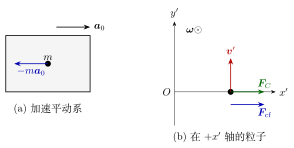
1.6.4地球自转效应 ✦ 交互模拟：傅科摆与玫瑰线 ↗
在地球表面，取随地球转动的参考系。地球自转角速度记为 \(\omega\)。把 \(\mathbf{\omega}\) 分解为当地竖直分量和水平分量： \[\mathbf{\omega}=\omega\left(\cos\lambda\,\hat{\mathbf{\jmath}}_{\rm north} +\sin\lambda\,\hat{\mathbf{k}}_{\rm up}\right), \tag{1.128}\] 其中 \(\lambda\) 为地理纬度。科里奥利力 \[\mathbf{F}_C=-2m\mathbf{\omega}\times\mathbf{v}' \tag{1.129}\] 对纯水平速度，科里奥利力的水平分量大小为 \[|F_{C,\rm horizontal}|=2m\omega v|\sin\lambda|, \tag{1.130}\] 对纯水平运动，它使物体在北半球向右偏、南半球向左偏。其中 \(\lambda\) 为地理纬度。
对傅科摆的小幅摆动，设摆锤在水平面内的坐标为 \((x,y)\)，则科里奥利加速度的水平分量为 \((2\omega\sin\lambda\,\dot y,-2\omega\sin\lambda\,\dot x)\)。于是 \[\ddot x-2\omega\sin\lambda\,\dot y+\omega_0^2x=0,\qquad \ddot y+2\omega\sin\lambda\,\dot x+\omega_0^2y=0, \tag{1.131}\] 其中 \(\omega_0=\sqrt{g/l}\)。这组方程的解表明，摆动平面以角速度 \(\omega\sin\lambda\) 缓慢进动，进动周期为 \[T_{\rm F}=\frac{2\pi}{\omega|\sin\lambda|}. \tag{1.132}\] 此处 \(g\) 已吸收当地静态离心修正，忽略 \(\omega^2\) 的其他影响；周期分子是恒星日，而非严格的24小时。赤道处该阶进动为零，周期趋于无穷；进动方向在两半球相反。
大尺度大气运动和长程弹道需要评估地球自转项。判断是否可以忽略科里奥利效应，可比较特征速度 \(U\)、长度 \(L\) 与转速，构造罗斯贝数 \(\mathrm{Ro}=U/(2\omega L)\)。局部小尺度运动不能只凭“位于北半球”就断言自转项占主导。
例 1.24 (绕竖直直径旋转的圆环与小珠). 在地面实验舱中，半径为 \(R\) 的光滑圆形导轨以恒定角速度 \(\omega\) 绕竖直直径转动，研究离心效应与重力竞争；小环质量为 \(m\)，套在导轨上。以最低点为 \(\theta=0\)，转动系中的有效势能为 \[V_{\rm eff}(\theta)=-mgR\cos\theta-\frac12m\omega^2R^2\sin^2\theta.\] 平衡条件 \(V_{\rm eff}'=0\) 给出 \[\sin\theta\left(g-\omega^2R\cos\theta\right)=0.\] 故平衡位置为 \(\theta=0,\pi\)，以及（当 \(\omega^2>g/R\) 时，左右各有一个对称位置） \[\cos\theta_0=\frac{g}{\omega^2R}.\] \(\theta=0\) 在 \(\omega^2<g/R\) 时稳定，在 \(\omega^2>g/R\) 时失稳；\(\theta=\pi\) 恒不稳定；\(\theta_0\) 稳定。这是离心力导致的分岔：转速增大到临界值时，最低点失稳，系统转向新的稳定平衡。本例假定地面均匀重力。失重旋转舱应取相应的微重力模型，不能直接照搬地面平衡角。
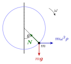
1.6.5太空电梯：旋转系中的有效引力
太空电梯的设想是：从地球赤道向外延伸一根缆绳，顶端系一个配重，使整根缆绳随地球自转。缆绳上的每一点都在旋转系中静止，因此可以直接用离心力与引力的平衡来分析。这个例子把非惯性系、有效势能和材料强度联系起来，是现代空间工程中的经典力学问题。
例 1.25 (太空电梯的张力与视重). 设地球质量为 \(M\)、半径为 \(R_E\)、自转角速度为 \(\Omega\)。缆绳沿赤道径向向外，线密度为 \(\mu\)，顶端 \(r_t\) 处连接配重。求缆绳中的张力分布、同步轨道半径，以及攀爬器在缆绳上的视重和科里奥利偏转。
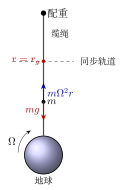
解：在随地球转动的参考系中，单位质量的等效势能为 \[\Phi_{\rm eff}(r)=-\frac{GM}{r}-\frac12\Omega^2r^2,\] 等效径向加速度（取向外为正）为 \[a_{\rm eff}(r)=-\Phi_{\rm eff}'(r)=\Omega^2r-\frac{GM}{r^2}.\] 令 \(a_{\rm eff}=0\)，得同步轨道半径 \[r_g=\left(\frac{GM}{\Omega^2}\right)^{1/3} \approx4.22\times10^7\ \mathrm{m},\] 对应高度约 \(3.58\times10^7\ \mathrm{m}\)。在 \(r<r_g\) 处引力占优，\(a_{\rm eff}<0\)，缆绳被向下拉；在 \(r>r_g\) 处离心力占优，\(a_{\rm eff}>0\)，缆绳被向外拉。同步轨道处视重为零。
取 \(r\) 到 \(r+\mathrm{d}r\) 的一段缆绳，其平衡条件为 \[\mathrm{d}T-\mu\frac{GM}{r^2}\mathrm{d}r+\mu\Omega^2r\,\mathrm{d}r=0,\] 即 \[\frac{\mathrm{d}T}{\mathrm{d}r} =\mu\left(\frac{GM}{r^2}-\Omega^2r\right).\] 顶端若挂有质量 \(M_t\) 的配重，配重的径向平衡要求 \[T_t=T(r_t)=M_t\left(\Omega^2r_t-\frac{GM}{r_t^2}\right).\] 取 \(r_t>r_g\) 才能在这个模型中提供正的顶端张力。由微分方程从 \(r_t\) 积到 \(r\)， \[\begin{aligned} T(r)-T_t &=\mu\int_{r_t}^{r}\left(\frac{GM}{s^2}-\Omega^2s\right)\mathrm{d}s\\ &=\mu GM\left(\frac1{r_t}-\frac1r\right) +\frac{\mu\Omega^2}{2}(r_t^2-r^2). \end{aligned}\tag{1.133}\] 对最后一式求导可恢复原微分方程，这是检查符号的直接方法。顶端自由且无配重时才可取 \(T_t=0\)，并仍须检查全段 \(T(r)\ge0\)；负张力表示柔绳模型不可行。因为 \(T'\) 在 \(r_g\) 内侧为正、外侧为负，跨过 \(r_g\) 的可行绳段在同步半径处达到张力最大值。本例只分析理想线密度恒定绳，未论证具体材料或工程可建性。
对固定在绳上的小质量 \(m\)，保持其静止所需的净径向支承力为 \(-ma_{\rm eff}\)，大小为 \(m|a_{\rm eff}|\)；超过同步半径后支承方向反转。因此“视重为零”并非沿整根绳成立。
若攀爬器以径向速度 \(v\) 沿缆绳运动，它还受到科里奥利力 \[\mathbf{F}_C=-2m\mathbf{\Omega}\times\mathbf{v}',\] 其大小为 \(2m\Omega v\)。在赤道处，向上爬升时科里奥利力指向西，向下返回时指向东。这个横向力必须由缆绳的约束或攀爬机构承担，是太空电梯设计中的另一个关键力学因素。
1.7有心力
有心力是质点力学中最重要的一类力：行星绕日、电子绕核、散射实验都归结为有心力问题。由于力始终指向或背离一个固定点，角动量守恒，运动被限制在一个平面内；再结合能量守恒，就可以把二维问题化为一维的径向问题。本节从这些基本性质出发，导出比内公式、开普勒定律、有效势能、轨道稳定性、伯特兰定理、散射截面和潮汐力。
1.7.1有心力的基本性质与比内公式 ✦ 交互模拟：比奈方程 ↗
若力始终指向或背离某一固定点，且大小只与到该点的距离有关， \[\mathbf{F}=F(r)\hat{\mathbf{e}}_r, \tag{1.134}\] 则称为有心力。取力心为原点，则 \[\mathbf{M}=\mathbf{r}\times\mathbf{F}=F(r)\,\mathbf{r}\times\hat{\mathbf{e}}_r=0, \tag{1.135}\] 因此角动量守恒，运动限于一个平面内。取该平面为极坐标平面，则 \[J=mr^2\dot\theta=\text{常量},\qquad h=\frac{J}{m}=r^2\dot\theta . \tag{1.136}\] \(h\) 称为比角动量。面积速度 \({\rm d}A/{\rm d}t=h/2\) 为常量。
径向运动方程为 \[m\left(\ddot r-r\dot\theta^2\right)=F(r). \tag{1.137}\] 利用 \(\dot\theta=h/r^2\)，可消去 \(\dot\theta\)： \[m\ddot r-\frac{mh^2}{r^3}=F(r). \tag{1.138}\] 机械能为 \[E=\frac12m\dot r^2+\frac{mh^2}{2r^2}+V(r) =\frac12m\dot r^2+V_{\rm eff}(r), \tag{1.139}\] 其中 \[V_{\rm eff}(r)=V(r)+\frac{mh^2}{2r^2} =V(r)+\frac{J^2}{2mr^2} \tag{1.140}\] 称为有效势能。第二项 \(\dfrac{J^2}{2mr^2}\) 称为离心势能，它来源于角动量守恒，在 \(J\ne0\) 且真实势不比 \(-1/r^2\) 更强地奇异时形成径向势垒；不能据此断言任意有心势都不会发生落心。
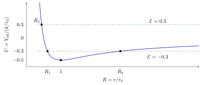
为了求轨道，下面引入比内公式。令 \(u=1/r\)。利用 \[\dot r=\frac{\mathrm{d}r}{\mathrm{d}\theta}\dot\theta =-\frac{1}{u^2}\frac{\mathrm{d}u}{\mathrm{d}\theta}\,hu^2 =-h\frac{\mathrm{d}u}{\mathrm{d}\theta}, \tag{1.141}\] \[\ddot r=\frac{\mathrm{d}\dot r}{\mathrm{d}\theta}\dot\theta =-h\frac{\mathrm{d}^{2} u}{\mathrm{d}\theta^{2}}\,hu^2 =-h^2u^2\frac{\mathrm{d}^{2} u}{\mathrm{d}\theta^{2}}. \tag{1.142}\] 代入径向方程 (1.138)，得 \[-mh^2u^2\left(\frac{\mathrm{d}^{2} u}{\mathrm{d}\theta^{2}}+u\right)=F(1/u). \tag{1.143}\] 于是 \[\boxed{\;\frac{\mathrm{d}^{2} u}{\mathrm{d}\theta^{2}}+u =-\frac{F(1/u)}{mh^2u^2} =-\frac{mF(1/u)}{J^2u^2}\;} \tag{1.144}\] 这就是比内公式。它把“求轨道”的问题转化为关于 \(u(\theta)\) 的二阶常微分方程。
比内公式的推导只用了角动量守恒和极坐标运动方程，不依赖于 \(F(r)\) 的具体形式。因此在 \(J\ne0\)、可用单调角度参数的轨道段上，它适用于任意有心力；\(J=0\) 的纯径向运动应直接用径向时间方程。若已知 \(F(r)\)，解出 \(u(\theta)\) 即得轨道；反之，若已知轨道 \(u(\theta)\)，也可反推出有心力 \(F(r)\)。
1.7.2平方反比引力与开普勒定律
考虑引力 \[F(r)=-\frac{k}{r^2}=-ku^2,\qquad k=GMm. \tag{1.145}\] 代入比内公式： \[\frac{\mathrm{d}^{2} u}{\mathrm{d}\theta^{2}}+u=\frac{km}{J^2}\equiv\text{常量}. \tag{1.146}\] 其通解为 \[u=A\cos(\theta-\theta_0)+\frac{km}{J^2}. \tag{1.147}\] 于是 \[r=\frac{p}{1+e\cos(\theta-\theta_0)},\qquad p=\frac{J^2}{km},\qquad e=\frac{AJ^2}{km}. \tag{1.148}\] 以下取 \(J\ne0\)、\(e\ge0\)，这是以力心为焦点的圆锥曲线：
\(e=0\)：圆；
\(0<e<1\)：椭圆；
\(e=1\)：抛物线；
\(e>1\)：双曲线。
在近心点 \(\theta=\theta_0\)，\(\dot r=0\)、\(r_p=p/(1+e)\)，故 \[E=\frac{J^2}{2mr_p^2}-\frac{k}{r_p} =\frac{k}{2p}\bigl[(1+e)^2-2(1+e)\bigr].\] 用 \(p=J^2/(km)\) 消去 \(p\)，得到总能量与偏心率的关系 \[E=\frac{mk^2}{2J^2}\left(e^2-1\right). \tag{1.149}\] 因此 \(E<0\) 对应椭圆（束缚态），\(E=0\) 对应抛物线（临界逃逸），\(E>0\) 对应双曲线（散射态）。
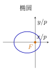
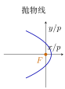
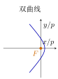
对椭圆，\(p=a(1-e^2)\)、短半轴 \(b=a\sqrt{1-e^2}\)，因此 \(E=-k/(2a)\)。面积速度为 \(h/2\)，一周面积为 \(\pi ab\)，于是 \[T=\frac{2\pi ab}{h},\qquad h^2=\frac{k}{m}p=GM a(1-e^2),\qquad T^2=\frac{4\pi^2a^3}{GM}.\] 这个推导先把力心视为固定。对真实两体相对运动，应把动力学质量换成约化质量、\(k=Gm_1m_2\)，从而 \(k/\mu=G(m_1+m_2)\)。此时 \(a\) 是两体相对距离轨道的半长轴，而非任意一颗天体关于质心轨道的半长轴。
开普勒三定律可由上述结果导出：
行星沿椭圆轨道运动，太阳位于椭圆的一个焦点上；
行星与太阳的连线在相等时间内扫过相等面积（面积速度守恒）；
行星公转周期 \(T\) 的平方与椭圆半长轴 \(a\) 的立方成正比： \[T^2=\frac{4\pi^2a^3}{G(M+m)}. \tag{1.150}\] 当 \(M\gg m\) 时，\(T^2\approx4\pi^2a^3/(GM)\)。
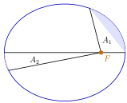
1.7.3有效势能、轨道分类与稳定性 ✦ 交互模拟：有效势与轨道稳定性 ↗
由式 (1.139)，径向运动等价于一维问题： \[\frac12m\dot r^2+V_{\rm eff}(r)=E. \tag{1.151}\] 圆轨道满足 \[V_{\rm eff}'(r_0)=0 \quad\Longleftrightarrow\quad F(r_0)=-\frac{J^2}{mr_0^3}. \tag{1.152}\] 这就是“有心力提供向心力”的条件。圆轨道的能量为 \[E_0=V_{\rm eff}(r_0). \tag{1.153}\] 令 \(r=r_0+\delta r\)，在固定角动量下展开 \(m\ddot r=-V_{\rm eff}'(r)\)： \[m\ddot{\delta r}=-V_{\rm eff}''(r_0)\delta r+O(\delta r^2).\] 所以线性径向振动频率为 \(\omega_r^2=V_{\rm eff}''(r_0)/m\)，稳定性要求 \[V_{\rm eff}''(r_0)>0. \tag{1.154}\] 对于平方反比引力， \[r_0=\frac{J^2}{mk},\qquad E_0=-\frac{mk^2}{2J^2},\qquad \omega_0=\frac{J}{mr_0^2}=\sqrt{\frac{k}{mr_0^3}}. \tag{1.155}\]
例 1.26 (月球探测器的霍曼转移). 月球探测器在半径 \(r_1\) 的环月圆轨道上运行，欲通过霍曼转移进入半径 \(r_2>r_1\) 的共面圆轨道。求两次点火所需的速度增量，并估算从 \(100\,\mathrm{km}\) 到 \(1000\,\mathrm{km}\) 环月圆轨道所需的总 \(\Delta v\)。
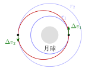
解：霍曼转移轨道是一个椭圆，近月点为 \(r_1\)、远月点为 \(r_2\)，半长轴为 \[a=\frac{r_1+r_2}{2}.\] 由椭圆能量 \(E=-m\mu_M/(2a)\) 与任意点能量 \(E=mv^2/2-m\mu_M/r\) 相等，消去 \(E\) 得活力公式 \[v^2=\mu\left(\frac{2}{r}-\frac{1}{a}\right),\] 其中本例 \(\mu=GM\) 为月球引力参数，与前文约化质量符号同形，但物理量、单位不同；以下数值用 \(\mu_M\) 表示。第一次点火在 \(r_1\) 处，把圆轨道速度 \[v_1^c=\sqrt{\frac{\mu}{r_1}}\] 加速到转移轨道近月点速度 \[v_1^t=\sqrt{\mu\left(\frac{2}{r_1}-\frac{1}{a}\right)},\] 故 \[\Delta v_1=v_1^t-v_1^c .\] 到达远月点 \(r_2\) 后，转移轨道速度为 \[v_2^t=\sqrt{\mu\left(\frac{2}{r_2}-\frac{1}{a}\right)},\] 而目标圆轨道速度为 \[v_2^c=\sqrt{\frac{\mu}{r_2}}.\] 第二次点火使探测器加速到 \(v_2^c\)，于是 \[\Delta v_2=v_2^c-v_2^t .\] 总速度增量为 \(\Delta v=\Delta v_1+\Delta v_2\)。
转移飞行时间为椭圆半周期 \(t_{\rm tr}=\pi\sqrt{a^3/\mu_M}\)。本例计算约为 \(4.91\times10^3\,\mathrm{s}\)。
取月球半径 \(R_M=1737.4\,\mathrm{km}\)、\(\mu_M=4.902800118\times10^{12}\,\mathrm{m^3/s^2}\)。对 \(r_1=R_M+100\,\mathrm{km}\)、\(r_2=R_M+1000\,\mathrm{km}\)，计算得 \[\Delta v_1\approx153\,\mathrm{m/s},\qquad \Delta v_2\approx139\,\mathrm{m/s},\] 故总 \(\Delta v\approx0.29\,\mathrm{km/s}\)。霍曼转移的两次点火都沿速度方向，在球对称两体模型、瞬时切向双脉冲、指定两圆轨道之间具有标准的低速度增量性质；不能推广为允许任意脉冲数及中间轨道时的全局最优。实际任务需另计摄动、有限推力和误差。采用的月球参数来源于 JPL，见章末来源；轨道高度是教学设定，不对应特定任务。
有效势能还决定圆轨道的稳定性。考虑一般幂次有心力 \[F(r)=-\frac{k}{r^n}=-ku^n . \tag{1.156}\] 由比内公式，圆轨道满足 \[ku_0^{n-3}=mh^2 . \tag{1.157}\] 令 \(u=u_0+\xi\)，线性化得 \[\frac{\mathrm{d}^{2} \xi}{\mathrm{d}\theta^{2}}+(3-n)\xi=0 . \tag{1.158}\] 因此圆轨道稳定的条件是 \[\boxed{\;n<3\;} \tag{1.159}\] 当 \(n<3\) 时，径向扰动表现为简谐振荡，轨道在圆附近振荡；当 \(n>3\) 时出现指数增长；\(n=3\) 时线性方程为 \(\xi''=0\)，是退化临界情况，扰动可线性增长，不能称为指数增长或据此断言稳定。平方反比引力 \(n=2\) 是稳定情形，且扰动频率与角频率相同，轨道闭合（伯特兰定理的一个特例）。
例 1.27 (幂次势的圆轨道与径向频率). 质量为 \(m\) 的质点在势能 \(V(r)=\beta r^k\) 中运动，角动量为 \(L\)。求圆轨道半径与径向微振动频率，并验证拱点角公式。
解：有效势能为 \[V_{\rm eff}(r)=\frac{L^2}{2mr^2}+\beta r^k .\] 设 \(L\ne0\)、\(\beta k>0\) 且 \(k\ne-2\)，圆轨道满足 \(V_{\rm eff}'(r_0)=0\)： \[-\frac{L^2}{mr_0^3}+\beta k r_0^{k-1}=0 \quad\Longrightarrow\quad r_0=\left(\frac{L^2}{m\beta k}\right)^{1/(k+2)} .\] 在 \(r_0\) 附近作小振动，径向频率为 \[\omega_r^2=\frac{V_{\rm eff}''(r_0)}{m} =\frac{1}{m}\left[\frac{3L^2}{mr_0^4}+\beta k(k-1)r_0^{k-2}\right].\] 利用圆轨道条件 \(L^2/(mr_0^3)=\beta k r_0^{k-1}\)，得 \[\omega_r^2=\frac{\beta k(k+2)}{m}r_0^{k-2} =(k+2)\omega_0^2,\] 其中 \(\omega_0=L/(mr_0^2)\) 是圆轨道的角频率。稳定性还要求 \(k>-2\)。在小扰动极限，从近心点到远心点的拱点角为 \[\Psi=\pi\frac{\omega_0}{\omega_r} =\frac{\pi}{\sqrt{k+2}} .\] 当 \(k=2\) 时 \(\Psi=\pi/2\)，当 \(k=-1\) 时 \(\Psi=\pi\)；其他幂次也可能给出有理频率比，但近圆有理比只约束线性近似，不能保证有限振幅的所有轨道闭合。这个结果正是伯特兰定理证明的起点。
1.7.4进一步探索：伯特兰定理与轨道进动
圆轨道稳定不等于所有轨道闭合。本小节超出首次学习所必需的核心内容，使用比内方程与小振幅展开，说明闭合要求有多严格；所需基础是泰勒展开和三角恒等式。
定理 1.1 (伯特兰定理的通常正则情形). 对光滑吸引中心势，在可形成稳定圆轨道的连通半径范围内，若所有非碰撞束缚轨道都闭合，则允许的势只有 \(V=-k/r\) 与 \(V=kr^2/2\)（\(k>0\)），相差常数不影响运动。这里要求一族稳定圆轨道与其邻近束缚轨道，不能用仅存在孤立闭轨道替代。
必要条件：近圆频率比必须保持不变。
由前节径向小振动，近圆轨道的半径向周期转角为 \[\Psi_0=\pi\left[3+\frac{r_0V''(r_0)}{V'(r_0)}\right]^{-1/2}. \tag{1.160}\] 闭合要求径向与角向周期可公度。若对连续变化的轨道参数始终闭合，连续变化的频率比又只能取有理数，故它必须是常数。令中括号为 \(C>0\)，则 \[rV''=(C-3)V',\qquad V'=A r^{C-3}.\] 在该连通范围内，势能为幂次 \(V=\beta r^k+\mathrm{const}\)，\(k=C-2>-2\)；\(k=0\) 的极限形式为对数势 \(A\ln r\)。仅检验近圆运动还不能排除其他有理频率比。
再进一步：振幅变化不能改变频率比。
对幂次势，令 \(u=u_0(1+x)\)，用圆轨道条件消去系数，比内方程变成 \[x''+1+x=(1+x)^{-k-1},\] 撇号表示对方位角 \(\theta\) 求导。展开到三阶： \[x''+w_0^2x=a_2x^2+a_3x^3+O(x^4),\quad w_0^2=k+2,\] \[a_2=\frac{(k+1)(k+2)}2,\qquad a_3=-\frac{(k+1)(k+2)(k+3)}6.\] 设 \(\zeta=w\theta\)，用小振幅参数 \(\epsilon\) 写为 \[x=\epsilon\cos\zeta+\epsilon^2(c_0+c_2\cos2\zeta)+O(\epsilon^3),\quad w=w_0(1+d\epsilon^2+\cdots).\] 二阶常数项及倍频项给出 \(c_0=a_2/(2w_0^2)\)、\(c_2=-a_2/(6w_0^2)\)。三阶 \(\cos\zeta\) 项若不消去，会产生非周期的世俗项；其系数条件为 \[-2w_0^2d=2a_2(c_0+c_2/2)+3a_3/4,\] 于是 \[d=-\frac{5a_2^2}{12w_0^4}-\frac{3a_3}{8w_0^2} =\frac{(k+1)(2-k)}{24}.\] 若所有小而有限振幅轨道均闭合，频率比不能随连续振幅改变，必须有 \(d=0\)。故只剩 \(k=-1\) 或 \(k=2\)；对数势对应的比内展开取 \(k=0\)，其 \(d\ne0\)，亦被排除。这给出了所述正则情形中的筛选条件。
充分性：两个候选确实闭合。
平方反比吸引势的非碰撞束缚轨道已证明为焦点椭圆。对各向同性谐振子，\(\ddot x+\omega^2x=\ddot y+\omega^2y=0\)，通过旋转平面坐标并选择时间原点，可写成 \(x=A\cos\omega t,y=B\sin\omega t\)，轨道是以力心为中心的椭圆；径向退化轨道为线段。因此两个候选均满足闭合要求。
开普勒椭圆的长轴方向固定，比单纯的角动量守恒更强。在 \(V=-k/r\) 中，还存在沿近心方向的守恒量 \(\mathbf{A}=\mathbf{p}\times\mathbf{J}-mk\hat{\mathbf{e}}_r\)。其守恒可在章末习题直接检验。隐藏守恒量说明为何这两类势具有特别简单的轨道；更一般的中心势通常允许拱点进动。
对幂次势，\(\Psi_0=\pi/\sqrt{k+2}\) 只是在近圆极限的半径向周期转角。从一个近心点到下一个近心点的方位增量约为 \(2\Psi_0\)。对接近开普勒势的运动，常用进动约定为 \(\Delta\varpi\simeq2\Psi_0-2\pi\)。这不是一般偏心轨道的精确公式，也不能直接用来计算广义相对论进动。
有限振幅的精确拱点角应从能量积分计算： \[\Psi(E,J)=\int_{r_-}^{r_+} \frac{|J|\,\mathrm{d}r}{r^2\sqrt{2m[E-V(r)]-J^2/r^2}}. \tag{1.161}\] 这里从近心到远心只积分一次；再乘2才是一个完整径向周期的转角。进一步阅读可用本章参考的中心力讲义，并在第六章用作用变量重新讨论周期。
1.7.5散射截面与卢瑟福散射 ✦ 交互模拟：散射与俘获 ↗
考虑质量为 \(m\) 的粒子以初速 \(v_0\)、瞄准距 \(b\) 射向力心。角动量和能量为 \[J=mv_0b,\qquad E=\frac12mv_0^2 . \tag{1.162}\] 粒子在有心力场中偏转，出射方向与入射方向的夹角 \(\Theta\) 称为散射角。所有瞄准距在 \(b\sim b+\mathrm{d}b\) 内的粒子，被散射到 \(\Theta\sim\Theta+\mathrm{d}\Theta\) 的立体角内。在轴对称、每个散射角只对应一个瞄准距的分支上，入射环带面积为 \(\mathrm{d}\sigma=2\pi b|\mathrm{d}b|\)，出射角环的立体角为 \(\mathrm{d}\Omega=2\pi\sin\Theta|\mathrm{d}\Theta|\)。两者相除，定义微分散射截面 \[\frac{\mathrm{d}\sigma}{\mathrm{d}\Omega}=\frac{b}{\sin\Theta}\left|\frac{\mathrm{d}b}{\mathrm{d}\Theta}\right|, \tag{1.163}\] 若多个不同瞄准距产生同一散射角，微分截面应把各分支贡献相加。总截面为 \[\sigma=\int \frac{\mathrm{d}\sigma}{\mathrm{d}\Omega}\,\mathrm{d}\Omega =2\pi\int_0^\pi \frac{b}{\sin\Theta}\left|\frac{\mathrm{d}b}{\mathrm{d}\Theta}\right|\sin\Theta\,\mathrm{d}\Theta . \tag{1.164}\]
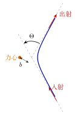
对于库仑排斥力 \[F(r)=\frac{k}{r^2},\qquad k=\frac{q_1q_2}{4\pi\varepsilon_0}, \tag{1.165}\] 以下假设固定重靶、点电荷、非相对论且无屏蔽，取 \(k>0\)。以近心点方向为极轴，比内方程的排斥解可写为 \[r=\frac{p}{e\cos\theta-1},\qquad p=\frac{J^2}{mk},\quad e^2=1+\frac{2EJ^2}{mk^2}.\] 无穷远的渐近角满足 \(\cos\theta_\infty=1/e\)。入射速度指向近心区、出射速度离开，因此速度偏转角为 \(\Theta=\pi-2\theta_\infty\)，不是直接把两条无向直线的小夹角当作偏转角。于是 \[\cot(\Theta/2)=\tan\theta_\infty=\sqrt{e^2-1} =\frac{mv_0^2b}{k},\] 散射角与瞄准距满足 \[b=\frac{k}{mv_0^2}\cot\frac{\Theta}{2} =\frac{k}{2E}\cot\frac{\Theta}{2}. \tag{1.166}\] 对 \(b=(k/2E)\cot(\Theta/2)\) 求导， \[\left|\frac{\mathrm{d}b}{\mathrm{d}\Theta}\right|=\frac{k}{4E}\csc^2(\Theta/2).\] 代入式 (1.163)，用 \(\sin\Theta=2\sin(\Theta/2)\cos(\Theta/2)\) 化简，得卢瑟福散射公式 \[\boxed{\; \frac{\mathrm{d}\sigma}{\mathrm{d}\Omega} =\left(\frac{k}{4E}\right)^2 \frac{1}{\sin^4(\Theta/2)} =\left(\frac{q_1q_2}{16\pi\varepsilon_0E}\right)^2 \frac{1}{\sin^4(\Theta/2)} \;} \tag{1.167}\] 总截面发散，反映库仑力是长程力；实验报告通常给定非零的最小散射角，屏蔽也可改变小角行为。对 \(\Theta\ge\Theta_{\min}>0\)，积分截面为 \(\sigma=\pi[k/(2E)]^2\cot^2(\Theta_{\min}/2)\)，与 \(\pi b_{\max}^2\) 一致。不能只凭“探测器有限大小”就消除包含零角的长程发散。
例 1.28 (月球探测器与微陨石的刚球散射). 把月球探测器与微陨石的碰撞简化为半径为 \(a\) 的刚性球：由 \(b=a\sin\varphi\)、\(\Theta=\pi-2\varphi\) 得 \[b=a\cos\frac{\Theta}{2},\qquad \frac{\mathrm{d}\sigma}{\mathrm{d}\Omega} =\frac{b}{\sin\Theta}\left|\frac{\mathrm{d}b}{\mathrm{d}\Theta}\right| =\frac{a^2}{4}.\] 总截面 \(\sigma=\pi a^2\)，恰为几何截面积，可用于估算微陨石撞击探测器的概率。
卢瑟福散射是经典力学最著名的“判决性实验”之一。大角度散射对短距离相互作用敏感，因而可以用来检验原子内部电荷分布模型。今天，散射截面仍是粒子物理、核物理和冷原子物理中探测相互作用的基本工具；量子力学中的卢瑟福公式在库仑势下与经典结果形式上一致。
1.7.6潮汐力
潮汐力不是一种新的基本力，而是引力场在有限大小物体上的差分效应。设外引力场为 \(\mathbf{g}(\mathbf{r})\)，物体上相距 \(\Delta\mathbf{r}\) 的两点加速度之差为 \[\Delta\mathbf{a}=\mathbf{g}(\mathbf{r}+\Delta\mathbf{r})-\mathbf{g}(\mathbf{r}) \approx(\Delta\mathbf{r}\cdot\nabla)\mathbf{g}. \tag{1.168}\] 对于点质量 \(M\) 的引力场 \(\mathbf{g}=-GM\mathbf{r}/r^3\)，先求雅可比 \(\partial g_i/\partial x_j=GM(3x_ix_j/r^5-\delta_{ij}/r^3)\)，再乘以 \(\Delta x_j\)，得到 \[\Delta\mathbf{a}=\frac{GM}{r^3}\left[3(\Delta\mathbf{r}\cdot\hat{\mathbf{r}})\hat{\mathbf{r}}-\Delta\mathbf{r}\right]. \tag{1.169}\] 沿径向（\(\Delta\mathbf{r}\parallel\hat{\mathbf{r}}\)）有 \[\Delta a_r=+\frac{2GM}{r^3}\Delta r,\] 物体被拉伸；沿垂直方向（\(\Delta\mathbf{r}\perp\hat{\mathbf{r}}\)）有 \[\Delta a_\perp=-\frac{GM}{r^3}\Delta r_\perp,\] 物体被压缩。这正是潮汐隆起的几何来源：地球面向月球和背向月球的两侧都被“拉出去”，给出理想平衡潮汐的拉伸方向；真实海潮还受海盆、海岸及耗散动力学影响。
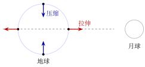
潮汐力的大小随距离迅速衰减： \[|\Delta\mathbf{a}|\sim\frac{GM}{r^3}\,\Delta r . \tag{1.170}\] 因此潮汐效应在近距离天体系统中特别显著。
潮汐锁定：潮汐隆起受到引力转矩，使天体自转角速度逐渐趋向公转角速度。月球已被地球潮汐锁定，以近乎同一面朝向地球，观测中的天平动仍会改变可见区域；潮汐耗散也会交换自转与轨道角动量。
洛希极限：当小物体的自身引力不足以抵抗主星的潮汐拉伸时，它会被撕裂。设小物体半径为 \(R\)、密度为 \(\rho\)，主星质量为 \(M\)，则潮汐撕裂的临界距离约为 \[d_{\rm Roche}\sim R\left(\frac{2M}{m}\right)^{1/3} =\left(\frac{3M}{2\pi\rho}\right)^{1/3} \propto \rho^{-1/3}. \tag{1.171}\] 对理想同步流体卫星，常用模型写成 \(d_{\rm Roche}\simeq2.44R_M(\rho_M/\rho)^{1/3}\)，其中 \(R_M,\rho_M\) 为主星半径、平均密度。这个系数对应另一套流体平衡模型，不能直接乘到上述点对点拉伸估算式上。土星环、彗星碎裂等现象都与洛希极限有关。
潮汐加热：若轨道偏心率较大，潮汐形变随时间变化，机械能转化为内能。木卫二冰壳下的海洋、木卫一的火山活动，都与潮汐加热密切相关。
在广义相对论中，潮汐力对应时空曲率引起的测地线偏离。等效原理只能在一个自由落体参考系的局部邻域内消去引力加速度，但无法消去潮汐力；因此潮汐力是“引力的不可消除部分”，也是探测引力波的基本原理：引力波通过时，空间中的自由检验质量会发生差分振荡。
1.7.7拉格朗日点与限制性三体问题 ✦ 交互模拟：拉格朗日点 ↗
拉格朗日点是限制性三体问题中最著名的结果。设两个大质量天体 \(M_1,M_2\) 绕共同质心作圆轨道，间距为 \(a\)，角速度为 \(\Omega\)，满足 \[\Omega^2=\frac{G(M_1+M_2)}{a^3}. \tag{1.172}\] 第三个物体质量 \(m\ll M_1,M_2\)，它对两个大天体的引力影响可以忽略，但仍在它们的引力场中运动。这就是限制性三体问题。
取随两个大天体一起转动的参考系，令 \(M_1\) 位于 \(x=0\)，\(M_2\) 位于 \(x=a\)。总质量 \(M=M_1+M_2\)，质心位于 \(x=a\mu\)，其中 \[\mu=\frac{M_2}{M_1+M_2}. \tag{1.173}\] 第三体的坐标为 \((x,y)\)，到两个大天体的距离分别为 \[r_1=\sqrt{x^2+y^2},\qquad r_2=\sqrt{(x-a)^2+y^2}. \tag{1.174}\] 在转动系中，第三体受到两个引力、离心力和科里奥利力。科里奥利力不做功，不贡献势能；单位质量的有效势能为 \[\Phi(x,y)=-\frac{GM_1}{r_1}-\frac{GM_2}{r_2} -\frac12\Omega^2\left[(x-a\mu)^2+y^2\right]. \tag{1.175}\] 第三体的运动方程为 \[\ddot x-2\Omega\dot y=-\frac{\partial \Phi}{\partial x},\qquad \ddot y+2\Omega\dot x=-\frac{\partial \Phi}{\partial y}. \tag{1.176}\] 平衡点满足 \(\dot x=\dot y=0\)、\(\ddot x=\ddot y=0\)，因此 \[\frac{\partial \Phi}{\partial x}=0,\qquad \frac{\partial \Phi}{\partial y}=0. \tag{1.177}\] 这些平衡点就是拉格朗日点。
共线拉格朗日点 \(L_1,L_2,L_3\).
先令 \(y=0\)。在 \(M_1,M_2\) 之间的 \(L_1\) 点，\(0<x<a\)，有 \[\frac{\partial \Phi}{\partial x} =\frac{GM_1}{x^2}-\frac{GM_2}{(a-x)^2} -\Omega^2(x-a\mu)=0.\] 令 \(x=au\)，并利用 \(\Omega^2=GM/a^3\)，得到无量纲方程 \[\frac{1-\mu}{u^2}-\frac{\mu}{(1-u)^2}-(u-\mu)=0, \qquad 0<u<1. \tag{1.178}\] 这是关于 \(u\) 的代数方程，一般没有简单的闭式解，但可用数值方法求解。对小的质量比 \(\mu\)，近似有 \[u_{L1}\approx1-\left(\frac{\mu}{3}\right)^{1/3},\qquad u_{L2}\approx1+\left(\frac{\mu}{3}\right)^{1/3},\qquad u_{L3}\approx-1+\frac{7}{12}\mu . \tag{1.179}\] 因此 \(L_1\) 位于两天体之间、靠近较小天体；\(L_2\) 位于较小天体外侧；\(L_3\) 位于较大天体另一侧。三个共线点都在两体连线上。
三角拉格朗日点 \(L_4,L_5\).
令 \[x=\frac a2,\qquad y=\pm\frac{\sqrt3}{2}a . \tag{1.180}\] 此时 \(r_1=r_2=a\)，即 \(L_4,L_5\) 与 \(M_1,M_2\) 构成等边三角形。直接代入式 (1.177) 验证： \[\frac{\partial \Phi}{\partial x} =\frac{GM_1(a/2)}{a^3} +\frac{GM_2(-a/2)}{a^3} -\Omega^2\left(\frac a2-a\mu\right) =0,\] \[\frac{\partial \Phi}{\partial y} =\frac{GM_1(\sqrt3a/2)}{a^3} +\frac{GM_2(\sqrt3a/2)}{a^3} -\Omega^2\frac{\sqrt3a}{2} =0.\] 所以 \(L_4,L_5\) 确实是平衡点，它们位于两体连线的两侧，与两天体构成等边三角形。
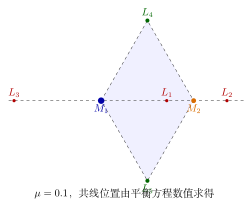
稳定性分析.
平衡点是否存在与是否稳定是两个问题。令 \(x=x_0+\xi\)、\(y=y_0+\eta\)，在平衡点附近线性化式 (1.176)： \[\ddot\xi-2\Omega\dot\eta =-\Phi_{xx}\xi-\Phi_{xy}\eta, \tag{1.181}\] \[\ddot\eta+2\Omega\dot\xi =-\Phi_{xy}\xi-\Phi_{yy}\eta, \tag{1.182}\] 其中二阶偏导数在平衡点取值。设简正模 \(\xi,\eta\propto e^{\lambda t}\)，代入后得到关于 \(\xi,\eta\) 的齐次线性方程组。要有非零解，系数行列式必须为零： \[\begin{vmatrix} \lambda^2+\Phi_{xx} & -2\Omega\lambda+\Phi_{xy}\\ 2\Omega\lambda+\Phi_{xy} & \lambda^2+\Phi_{yy} \end{vmatrix}=0 . \tag{1.183}\] 展开行列式，就得到特征方程 \[\lambda^4+\left(\Phi_{xx}+\Phi_{yy}+4\Omega^2\right)\lambda^2 +\Phi_{xx}\Phi_{yy}-\Phi_{xy}^2=0. \tag{1.184}\]
对共线点 \(L_1,L_2,L_3\)，令 \(A=GM_1/r_1^3+GM_2/r_2^3\)。在 \(y=0\) 直接微分可得 \(\Phi_{xy}=0\)、\(\Phi_{xx}=-2A-\Omega^2\)、\(\Phi_{yy}=A-\Omega^2\)。在三个共线平衡点可由平衡方程得到 \(A>\Omega^2\)，故两对角元异号。于是 \[\Phi_{xx}\Phi_{yy}-\Phi_{xy}^2<0, \tag{1.185}\] 特征方程的常数项为负，必有一个正实根，因此平衡不稳定。这正是为什么航天器不能长期“停”在 \(L_1,L_2,L_3\) 上，而需要主动轨道保持。
对三角点 \(L_4,L_5\)，直接求二阶偏导并在平衡点取值： \[\Phi_{xx}=-\frac34\Omega^2,\qquad \Phi_{yy}=-\frac94\Omega^2,\qquad \Phi_{xy}=\mp\frac{3\sqrt3}{4}(1-2\mu)\Omega^2. \tag{1.186}\] 代入式 (1.184)，得到 \[\lambda^4+\Omega^2\lambda^2 +\frac{27}{4}\mu(1-\mu)\Omega^4=0. \tag{1.187}\] 令 \(u=\lambda^2\)，则 \[u^2+\Omega^2u+\frac{27}{4}\mu(1-\mu)\Omega^4=0. \tag{1.188}\] 两根之和为 \(-\Omega^2<0\)，乘积为 \(\frac{27}{4}\mu(1-\mu)\Omega^4>0\)，若判别式严格为正且 \(0<\mu<1\)，则两个根为不同的负实数。临界重根还须检查模态是否完整，不能仅由“纯虚特征值”推出有界稳定。判别式为 \[\Omega^4\left[1-27\mu(1-\mu)\right], \tag{1.189}\] 故线性有界稳定的条件为 \[1-27\mu(1-\mu)>0. \tag{1.190}\] 如果没有科里奥利力，\(L_4,L_5\) 是有效势能的极大点，运动不稳定；正是科里奥利力在质量比足够小时把运动“拧”成有界振荡。 因此在线性近似中稳定的条件为 \[\mu<\frac12\left(1-\sqrt{\frac{23}{27}}\right) \approx0.03852 \quad\text{或}\quad \mu>0.96148 . \tag{1.191}\] 对于 \(M_1>M_2\) 的情形，这等价于 \[\frac{M_1}{M_2}>24.96 . \tag{1.192}\] 太阳–木星系统、地球–月球系统都满足这一条件，这说明圆型限制性模型中三角点具有线性稳定性，但不能仅凭质量比就断言真实系统中的尘埃可长期聚集；而 \(L_1,L_2,L_3\) 是不稳定的。
拉格朗日点在航天中有重要应用：日地 \(L_1\) 点的太阳观测器可以连续观测太阳；日地 \(L_2\) 点是詹姆斯·韦布空间望远镜和许多深空探测器的理想位置；地月 \(L_2\) 点可用于月球背面通信中继。木星轨道上的特洛伊小行星群则聚集在太阳–木星 \(L_4,L_5\) 附近。由于共线点不稳定，航天器通常需要在 \(L_1,L_2\) 附近做周期性轨道保持，或运行在环绕该点的晕轨道上。
本章小结
本章以受力方程为起点，用守恒量、参考系变换和轨道几何组织解题：
一个模型：质点；
两个方程：运动学方程 \(\mathbf{r}(t)\) 与动力学方程 \(m\ddot{\mathbf{r}}=\mathbf{F}\)；
三个守恒律：动量、角动量、机械能；
一个核心问题：有心力场中的轨道与散射；
一个关键视角：非惯性系中的惯性力与太空电梯；
一个推广：质点系与质心运动、两体约化质量与位力定理；
三个现代延伸：伯特兰定理、潮汐力与拉格朗日点。
| 物理量 | 表达式 |
|---|---|
| 速度 | \(\mathbf{v}=\dot{\mathbf{r}}=\dot r\hat{\mathbf{e}}_r+r\dot\theta\hat{\mathbf{e}}_\theta\) |
| 加速度（极坐标） | \(\mathbf{a}=(\ddot r-r\dot\theta^2)\hat{\mathbf{e}}_r+(r\ddot\theta+2\dot r\dot\theta)\hat{\mathbf{e}}_\theta\) |
| 自然坐标加速度 | \(\mathbf{a}=\dot v\hat{\mathbf{e}}_t+\dfrac{v^2}{\rho}\hat{\mathbf{e}}_n\) |
| 转动系加速度 | \(\mathbf{a}=\mathbf{a}'+2\mathbf{\omega}\times\mathbf{v}'+\mathbf{\omega}\times(\mathbf{\omega}\times\mathbf{r})+\dot{\mathbf{\omega}}\times\mathbf{r}\) |
| 动量定理 | \(\displaystyle\int_{t_1}^{t_2}\mathbf{F}\,\mathrm{d}t=\mathbf{p}_2-\mathbf{p}_1\) |
| 角动量定理 | \(\dfrac{\mathrm{d}\mathbf{J}}{\mathrm{d}t}=\mathbf{r}\times\mathbf{F}\) |
| 机械能守恒 | \(T+V=E\) |
| 比内公式 | \(\dfrac{\mathrm{d}^2u}{\mathrm{d}\theta^2}+u=-\dfrac{mF(1/u)}{J^2u^2}\) |
| 有效势能 | \(V_{\rm eff}=V(r)+\dfrac{J^2}{2mr^2}\) |
| 圆轨道条件 | \(F(r_0)=-\dfrac{J^2}{mr_0^3}\) |
| 卢瑟福截面 | \(\dfrac{\mathrm{d}\sigma}{\mathrm{d}\Omega}=\left(\dfrac{q_1q_2}{16\pi\varepsilon_0E}\right)^2\dfrac{1}{\sin^4(\Theta/2)}\) |
| 伯特兰定理 | \(F=-\dfrac{k}{r^2}\) 或 \(F=-kr\) |
| 潮汐加速度 | \(\Delta\mathbf{a}=\dfrac{GM}{r^3}\left[3(\Delta\mathbf{r}\cdot\hat{\mathbf{r}})\hat{\mathbf{r}}-\Delta\mathbf{r}\right]\) |
1.8计算与模拟：用守恒量检验轨道
对平方反比引力，把长度单位取为初始圆轨道半径、时间单位取为其倒角频率，方程成为 \(\ddot{\mathbf x}=-\mathbf x/|\mathbf x|^3\)。取 \(\mathbf x_0=(1,0)\)、\(\mathbf v_0=(0,0.8)\)，它是一条束缚椭圆，不是圆轨道。可采用速度 Verlet 格式： \[\begin{aligned} \mathbf x_{n+1}&=\mathbf x_n+h\mathbf v_n+\tfrac12h^2\mathbf a(\mathbf x_n),\\ \mathbf v_{n+1}&=\mathbf v_n+\tfrac h2[\mathbf a(\mathbf x_n)+\mathbf a(\mathbf x_{n+1})]. \end{aligned}\tag{1.193}\] 每一步计算 \(\mathcal E=v^2/2-1/r\)、\(j=xv_y-yv_x\)，与初始 \(\mathcal E_0=-0.68,j_0=0.8\) 比较。理论上 \(a=-1/(2\mathcal E_0)=25/34\)、\(e=0.36\)、\(r_p=8/17\)、\(r_a=1\)。作图像“像椭圆”远远不够，还应检查转折点、能量误差和步长减半后的误差变化。
第六章会进一步说明该算法的哈密顿结构。算法不能消除近心点分辨率不足，也不能跨过 \(r=0\) 奇点。教材随附的 review/verify_ch01.py 使用上述初值比较两个步长，并保存误差报告；这是理想教学模型，不是任务轨道预报。
关键概念与常见误区
参考系与坐标系不同。用极坐标不等于使用非惯性系；极坐标加速度中的几何项也不自动成为真实外力。
速率不变不等于速度不变；瞬时速度为零不等于加速度为零。
内力和为零不意味着内力功为零；动量守恒不意味着动能守恒。
能量方法给速率或允许区域，约束反力通常仍须用法向动力学求出。
固定点、移动点和质心的角动量关系必须注明参考点；火箭须注明系统边界。
稳定、闭合、可积是不同的问题。圆轨道稳定仅约束小扰动，不能推出所有偏心轨道闭合。
分层习题
以下除特别说明外使用理想模型，给定数值是练习参数。
基础理解：旋转基矢。 不引用极坐标加速度公式，从 \(\mathbf{r}=r(\cos\theta,\sin\theta)\) 微分两次得到它。用 \(r=R\)、\(\dot\theta=\omega\) 检查向心项的方向和量纲。
基础理解：力场定义域。 对连续径向力 \(F(r)\hat{\mathbf{e}}_r\) 在 \(r>0\) 写出全局径向势；再比较正文去轴无旋力场为何没有全局单值势。不能将后者的反例误解为所有去原点的中心势都不保守。
独立推导：大振幅摆。 把周期积分用 \(\sin(\theta/2)=k\sin\phi\)、\(k=\sin(\theta_0/2)\) 化为标准积分，推到 \(T/T_0=1+\theta_0^2/16+O(\theta_0^4)\)。讨论 \(\theta_0\to\pi\)。
基本应用：静摩擦。 漏斗母线与水平夹角为 \(0<\alpha<\pi/2\)，在距轴 \(r\) 处的物块随漏斗以 \(\omega\) 匀速转动，静摩擦系数为 \(\mu_s\)。求静止接触条件，说明什么时候存在转速上界。
综合分析：有限深势阱。 质点在 \(V=-V_0e^{-r^2/a^2}\)（\(V_0,a>0\)）中运动，角动量 \(J\ne0\)。求圆轨道的角动量上界及径向稳定性。特别区分严格稳定轨道与边界退化轨道，不能要求最大角动量处仍有严格稳定圆轨道。
势能图。 以 \(X=x/\ell\)、\(U=V/V_*\) 无量纲化，\(U=X^4-2X^2+0.4\)。求能量 \(E/V_*=0.2\) 时的运动区间与全部平衡点；求两个势阱底的小振动频率。
地球自转。 在赤道将物体以速度 \(u\) 竖直上抛。\(x\) 向东、\(y\) 向北、\(z\) 向上，忽略空气阻力并保留 \(\Omega\) 的一次项，求返回初始高度时的东西偏移。说明为何不能只分析下落半程。
傅科摆。 令 \(f=\Omega\sin\lambda\)，从正文两条水平运动方程出发，令 \(w=x+iy\)，再令 \(w=e^{-ift}z\)，求进动角速度的符号与周期。
潮汐。 用点质量外场雅可比求地球近、远两端相对地心的潮汐加速度，并求其差。已知地球半径 \(R_E\)、地月距 \(d\gg R_E\)、月球质量 \(M_m\)。解释相对加速度与绝对引力大小的区别。
质心与开放系统。 (a) 求均匀半球壳质心。(b) 火箭有效排气速率 \(v_e=3.5\,\mathrm{km/s}\)，无外力下需 \(\Delta v=8.0\,\mathrm{km/s}\)，求质量比，并说明能量是否可只对火箭本体闭合守恒。
位力模型。 均匀自引力球质量 \(M\)、半径 \(R\)，有内部各向同性速度弥散 \(\sigma_{\rm los}\)。从逐层组装球的势能积分推导 \(V=-3GM^2/(5R)\)，在位力平衡下求 \(M(R,\sigma_{\rm los})\)。是否可在未给可见质量和误差时直接声称发现暗物质？
碰撞。 质量 \(m\) 的粒子以 \(u\) 撞上静止的同质量粒子，恢复系数 \(e=1/2\)。求两末速度及初始动能损失比例，并在质心系复算。
综合守恒。 将机器人质量推广为 \(m\)、圆环质量推广为 \(M\)，均匀细环半径为 \(R\)。机器人相对环爬行一周，求环转角；再讨论 \(M\gg m\) 极限。
轨道设计。 用正文给定月球参数重算两个点火增量和转移时间，再令 \(r_2\to r_1\) 检查极限。说明两次点火时动量、能量的变化与中间弹道段有何区别。
隐藏守恒量。 对 \(V=-k/r\)，从 \(\mathbf{A}=\mathbf{p}\times\mathbf{J}-mk\hat{\mathbf{e}}_r\) 出发逐项求导，证明它守恒。该论证在哪些地方使用了力心固定与 \(J\) 守恒？
计算探索。 按本节 Verlet 算法积分十个理论周期，比较 \(h=0.01,0.005\) 的最大相对能量误差及角动量误差；记录每一步到力心的最小距离。解释为什么这些检查比只展示轨迹可靠。
解题思路与结果
两次应用乘积法则，分别得到 \(\dot{\hat{\mathbf{e}}_r}=\dot\theta\hat{\mathbf{e}}_\theta\)、\(\dot{\hat{\mathbf{e}}_\theta}=-\dot\theta\hat{\mathbf{e}}_r\)；匀速圆周时 \(\mathbf{a}=-R\omega^2\hat{\mathbf{e}}_r\)。
\(V(r)=-\int_{r_*}^{r}F(s)\mathrm{d}s+C\)，在可达的径向区间单值。去轴涡旋场则沿绕轴闭路做功 \(2\pi K\)，不能用单值径向积分消除。
恒等式 \(\cos\theta-\cos\theta_0=2[k^2-\sin^2(\theta/2)]\) 给出 \[T=4\sqrt{l/g}\int_0^{\pi/2}(1-k^2\sin^2\phi)^{-1/2}\mathrm{d}\phi\] 展开积分，\(T/T_0=1+k^2/4+\cdots=1+\theta_0^2/16+\cdots\)。\(\theta_0\to\pi\) 时积分发散，非小振动极限。
取沿坡向外上升为切向正向。转动系中有效力为 \(m\omega^2r\) 向外与 \(mg\) 向下，故 \[N=m(g\cos\alpha+\omega^2r\sin\alpha),\qquad F_t=m(g\sin\alpha-\omega^2r\cos\alpha).\]令 \(q=\omega^2r/g\)，条件是 \[|\sin\alpha-q\cos\alpha|\le\mu_s(\cos\alpha+q\sin\alpha).\] 下界为 \[q\ge\max\{0,(\sin\alpha-\mu_s\cos\alpha)/(\cos\alpha+\mu_s\sin\alpha)\}\] 若 \(\mu_s<\cot\alpha\)，还需 \[q\le(\sin\alpha+\mu_s\cos\alpha)/(\cos\alpha-\mu_s\sin\alpha)\] 否则无有限上界。\(\mu_s\ge\tan\alpha\) 时允许 \(q=0\)。
令 \(x=r_0^2/a^2\)，圆轨道条件为 \(J^2=2mV_0a^2x^2e^{-x}\)。右端在 \(x=2\) 达最大，故 \(|J|\le J_{\max}=\sqrt{8mV_0a^2}\,e^{-1}\)。用圆轨道条件求二阶导数得到 \(V_{\rm eff}''=4V_0e^{-x}(2-x)/a^2\)：\(x<2\) 稳定，\(x>2\) 不稳定。\(x=2\) 为退化临界，不能称为严格稳定。严格稳定圆轨道只取 \(|J|<J_{\max}\) 的内支。
\(X_i=\pm\sqrt{1\pm\sqrt{0.8}}\)，允许区间为左右两段。\(X=\pm1\) 为稳定点、\(X=0\) 为不稳定点；稳定点处 \(V''=8V_*/\ell^2\)，故 \(\omega_{\rm well}=\sqrt{8V_*/(m\ell^2)}\)。
零阶 \(z=ut-gt^2/2\)，一阶 \(\ddot x=-2\Omega\dot z\)。利用 \(\dot x(0)=0\)，得 \(\dot x=-2\Omega z\)、\(x=-\Omega ut^2+\Omega gt^3/3\)。在 \(t=2u/g\)，\(x=-4\Omega u^3/(3g^2)\)，向西。
\(\ddot w+2if\dot w+\omega_0^2w=0\)，替换后 \(\ddot z+(\omega_0^2+f^2)z=0\)。在线性模型内快速摆动的外包方向以 \(-f\) 转动；北半球从上方看顺时针。\(T=2\pi/|f|\)；物理上采用小摆角且 \(|f|\ll\omega_0\)。
近、远端相对地心的加速度分别沿地月连线向外，大小均近似 \(2GM_mR_E/d^3\)，矢量之差大小为 \(4GM_mR_E/d^3\)。背月端绝对引力仍指向月球，只是比地心受到的引力小。
(a) 球面环带质量为常数乘 \(\mathrm{d}z\)，\(z\in[0,R]\)，故 \(z_G=R/2\)。(b) \(m_0/m_f=e^{8/3.5}\simeq9.83\)。能量来自推进剂，且喷气携带能量；火箭本体是开放系统。
球内质量 \(M(r)=M(r/R)^3\)，\(\mathrm{d}M=3Mr^2\mathrm{d}r/R^3\)，因此 \[V=-\int_0^R GM(r)\mathrm{d}M/r=-3GM^2/(5R)\] 用 \(T=3M\sigma_{\rm los}^2/2\) 得 \(M=5R\sigma_{\rm los}^2/G\)。结论依赖均匀球和位力平衡等条件，缺少可见质量与误差时不能作所问的观测判断。
\(v_1=u/4,v_2=3u/4\)，末动能为初值的 \(5/8\)，损失 \(3/8\)。质心系中初速为 \(\pm u/2\)、末速为 \(\mp u/4\)，再加回 \(V_G=u/2\)。
机器人与环心相对总质心的距离分别为 \(MR/(M+m)\) 与 \(mR/(M+m)\)。总角动量为 \(MR^2\dot\varphi+[Mm/(M+m)]R^2\dot\alpha=0\)，配合 \(\alpha=\varphi+\theta\) 得 \(\Delta\varphi=-2\pi m/(M+2m)\)。\(M=m\) 时为 \(-2\pi/3\)，\(M\gg m\) 时约为 \(-2\pi m/M\)。
约为 \(153.47\,\mathrm{m/s}\)、\(138.84\,\mathrm{m/s}\) 和 \(4908.4\,\mathrm{s}\)。\(r_2\to r_1\) 时两速度增量趋零，半椭圆航行时间趋于原圆轨道半周期；转移圆轨道的必要操作此时已消失。点火期间由排气交换动量和能量，弹道段才使用两体机械能与角动量守恒。
\(\dot{\mathbf{J}}=0\)，\(\dot\mathbf{p}=-k\hat{\mathbf{e}}_r/r^2\)，且 \(\hat{\mathbf{e}}_r\times\mathbf{J}=mr(\dot r\hat{\mathbf{e}}_r-\mathbf{v})\)，所以 \[\dot\mathbf{p}\times\mathbf{J}=(mk/r)(\mathbf{v}-\dot r\hat{\mathbf{e}}_r)=mk\dot{\hat{\mathbf{e}}_r}\] 与另一项相消。力心运动或附加非中心力时此证明失效。
用初始值而非事后拟合值归一化误差，结果见随附脚本报告；二阶算法在步长足够小时应表现出相应收敛趋势。守恒量小误差不意味着轨道相位长期完全准确。
从牛顿力学走向变分法
本章展示了矢量受力方程、守恒律与几何方法怎样相互补充。但对复杂约束系统，逐个求约束反力仍然繁琐。下一章先研究“把整条路径作为自变量”的变分法：什么叫相邻路径，固定端点意味着什么，驻值为何不必为最小值。第三章再把这一数学语言用于动力学。新方法必须重现本章的运动方程与守恒结论，而不会取消它们。
进一步阅读与数据来源
查阅日期均为2026-11-05。月球轨道例题采用公开引力参数及平均半径；其余未标明观测来源的例题数值均为教学设定。
MIT 8.01SC，Chapter 15: Collision Theory，含质心系与碰撞能量分解：MIT公开碰撞讲义。
NASA/JPL，Astrodynamic Parameters：JPL天体动力学参数表；Planetary Satellite Physical Parameters：JPL卫星物理参数表。本章采用月球 \(GM=4902.800118\,\mathrm{km^3/s^2}\)、平均半径 \(1737.4\,\mathrm{km}\)，并在数值计算中转换到SI单位。
NASA，Electric Propulsion Hits Its Stride in Space：NASA电推进介绍，用于区分单粒子漂移模型与实际霍尔推进器的电离、输运等过程。
NASA，Webb’s Orbit at Sun-Earth Lagrange Point 2 (L2)：NASA韦布轨道示意，说明航天器运行于拉格朗日点附近的轨道，而非静止在该点。
Richard Fitzpatrick，得克萨斯大学公开天体力学讲义 Motion in nearly circular orbit：近圆轨道与拱点角，用于进一步学习本章的近圆分析。
NASA/JPL，Fundamentals of Electric Propulsion, Second Edition：电推进专著，进一步区分霍尔漂移、电离与阴极中和。